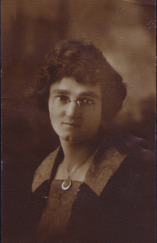
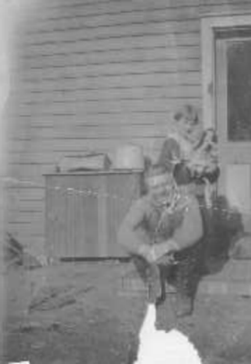
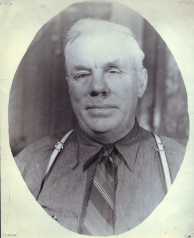

<!DOCTYPE HTML PUBLIC "-//W3C//DTD HTML 4.01//EN" "http://www.w3.org/TR/html4/strict.dtd">
<html>
	<head>
		<title>Ralph Smullin's Autobiography</title>
	    <meta http-equiv="Content-Script-Type" content="text/javascript" />
		<script src="biography.js"></script>
		<link rel=stylesheet type="text/css" href="biography.css">	
	</head>
</html>
<body scroll="no" onload="bookOpen();">
	<div id="book" name="book" class=book>
	    <div id="navigate" style="height:100%;width:180px;visibility:hidden;font-size:9;">
		    <div id="booktree" class="chapter">
			    <form name="gotochapter">
				    <b>CHAPTER MENU</b><br>
				    <select id="chapSelect" name="chapters" style="font-size: 9pt;" size="15" onclick="JumpToChapter();">
					    <option value=2>&nbsp;1-BIRTH - 7</option>
					    <option value=5>&nbsp;2-WESTWARD</option>
					    <option value=9>&nbsp;3-KANSAS</option>
					    <option value=10>&nbsp;4-MEMORIES</option>
					    <option value=12>&nbsp;5-FRIENDS</option>
					    <option value=15>&nbsp;6-SCHOOLS</option>
					    <option value=16>&nbsp;7-NEWSPAPERS</option>
					    <option value=20>&nbsp;8-FIRST BUG</option>
					    <option value=21>&nbsp;9-QUIT SCHOOL</option>
					    <option value=24>10-BACK HOME</option>
					    <option value=29>11-THE YOWELLS</option>
					    <option value=34>12-CHURCH'S</option>
					    <option value=37>13-GOVERNOR</option>
					    <option value=41>14-PRES FDR</option>
					    <option value=43>15-BAD BREAK</option>
					    <option value=45>16-GERALDINE</option>
					    <option value=47>17-MARRIED LIFE</option>
					    <option value=49>18-MOM'S LIFE</option>
					    <option value=50>19-WWII DRAFT</option>
					    <option value=51>20-KANSAS TRIP</option>
					    <option value=54>21-THE HALLERS</option>
					    <option value=56>22-NEWS BITS</option>
				    </select>	<!-- EMD CHAPSELECT SELECT TAG -->
			    </form>	<!-- EMD GOTOCHAPTER FORM TAG -->
		    </div>	<!-- EMD BOOKTREE DIV TAG -->
		    <div id="forward" class=rightarrow onclick="FlipPages(1);">
			    <b>Next Page</b>				    
			    
		    </div>	<!-- EMD FORWARD DIV TAG -->
		    <div id="gotopage" class=gopage>
			    <form name="GoPage">
				    <b>Page</b><br>
				    <input type="text" name="pagedisplay" size=2 value=1 style="text-align: center" maxlength="2">
				    <div id="limit" style="top:10%;font-size:20pt;"><b> /57</b></div><br>
				    <input type="button" value="Go To Page" name="gotobutton" onclick="GoToPage();">
			    </form>	<!-- EMD GOPAGE FORM DIV TAG -->
		    </div>	<!-- EMD GOTOPAGE DIV TAG -->
		    <div id="backup" class=leftarrow onclick="FlipPages(-1);">
			    <b>Prev Page</b>				    				    
			    
		    </div>	<!-- EMD BACKUP DIV TAG -->
		    <div id="helpdiv" style="top:80%;left:25px;">
		        <form name="Helpbtn">
		            <input type="button" id="helpbutton" value="Show Help" onclick="ShowHelp();">
		        </form>  <!-- EMD FORM HELP TAG -->
		    </div>
		</div>	<!-- EMD NAVIGATE DIV TAG -->
		<div id="page1" class=cover>				    
							    
			<div id="line1" style="top:50px;left:300px;font-size:50pt;">Ralph</div>				    
			<div id="line2" style="top:120px;left:300px;font-size:50pt;">Herman</div>					    
			<div id="line3" style="top:190px;left:300px;font-size:50pt;">Smullin's</div>				    
			<div id="line4" style="top:260px;left:300px;font-size:50pt;">Autobiography</div>				    
			<div id="line5" style="top:400px;left:300px;font-size:25pt;">Edited by his son</div>				    
			<div id="line6" style="top:440px;left:300px;font-size:25pt;">Andy Smullin</div>
		</div>	<!-- EMD PAGE 1 DIV TAG -->
		<div id="page2" class=page>
			
			<div id="cap2" class="cap" align="center">Ralph and Viola as infants</div>
			<p><font size=6>chapter 1 :: </font><font size=5><u>BIRTH TO AGE SEVEN</u></font></p>			
			<p>They say there is always a beginning to every tale and this one begins in a small town called
			Clay Center Kansas, where this person, (Ralph Smullin), was born on the twenty-second of January,
			Nineteen-Hundred and Ten.</p>
			<p>My parents, (Fred and Florence Smullin), were poor but proud, and lived on the bank of a creek.
			My father worked for the Telephone Company and he earned between fifteen and twenty dollars a
			month. I don't remember too much about my earliest childhood and rely on my parents to fill it in.</p>
			<p>There was the time when they were taking us across the creek to my Grandmother's place, which
			was on the high ground across from our place. Dad took me out of the boat and sat me up on
			the bank and turned around to get my sister. I fell over backwards into the creek and they
			did some exciting grabbing for me in order to fish me out of the water.</p>
			<p>I was always clumsy and my father thought he would never teach me to pick up my feet so I
			wouldn't fall over them.</p>
			<p>My father said that I was afraid of animals. We would be walking down the street when he
			would see a horse and would try to put himself between the horse and me. I would peer around
			him and start squawking, which would make dad so disgusted at me. He wasn't very happy about
			the whole affair.</p>
			<p>I do remember when he and my uncles would put up ice in the wintertime. They had a long saw
			with a long handle on one end, and at the front, a clevis hooked to a horse. One of them drove
			the horse while the other guided the saw with the handle. They would cut blocks out of the creek
			in this way, and float them down the creek to a hoist. The hoist carried them up the bank to the
			ice cellar where they covered each layer with sawdust.</p>
			<p>I also remember when the folks had the telephone girls over to the house for an ice skating party.
			They built a big fire on the bank, skated up and down on the creek and had a marshmallow roast
			before going home.</p>
			<p>Two boys had been skating together and I remember one of them had fallen on his skate and split
			his lip. The folks called the doctor, who came to he house in those days, and sewed up the
			boy's lip. (We didn't have a hospital and all of us kids were born at home.)</p>
		</div>	<!-- EMD PAGE 2 DIV TAG -->
		<div id="page3" class=page>
			
			<div id="cap3" class=cap align="center">Smullin - Anderson Wedding October 16, 1907</div>
			<p><font size=4>(chapter 1 continued)</font></p>
			<p>I also remember one Thanksgiving, as we were beginning our dinner, an old man was brought in,
			who had been riding on top of a load of hay. He had been drug off he load of hay as they
			were going under the telephone wires on the corner.</p>
			<p>Once again, the doctor was called but the doctor said he would be all right as soon as the old
			man got his wind and got over the shock of the fall. The old man had been wearing a heavy
			coat and fur cap, which kept him from getting hurt any worse than he did.</p>
			<p>On Sunday we had to polish our shoes and button them with a button hook which was the latest
			fashion in footwear at the time. We had to wear our garter belts which was a harness that
			fit over your shoulder and around your mid section and finally down to the stockings which came
			all the way up to the hips.</p>
			<p>We had some friends called Openlanders whose children we played with. A man called Warren,
			that worked on the telephone crew with dad, had three children that we played with. I had a
			Negro boy friend that lived up the road that I played with. I would watch his father pull
			snapping turtles from the creek after a cloudburst. The creek was formed from the backwaters
			of the Republican River. The only time the creek was active was when the river would rise due
			to a storm somewhere along the Republican River.</p>
			They were trying to get prohibition passed and in school we would sing a song about it. I
			don't know by whom it was written. It got sort of monotonous and went like this:<br><i>&nbsp;&nbsp;&nbsp;&nbsp;&nbsp;
            Probation is bound to come,<br>&nbsp;&nbsp;&nbsp;&nbsp;&nbsp;
            Probation is bound to come,<br>&nbsp;&nbsp;&nbsp;&nbsp;&nbsp;
            We've even set the date sir,<br>&nbsp;&nbsp;&nbsp;&nbsp;&nbsp;
            That's what the girls and boys believe in,<br>&nbsp;&nbsp;&nbsp;&nbsp;&nbsp;
            Only thing that's right sir.<br></i>
			Kansas was one of the first states to go dry and the last one to go wet again.<br>
			<p>One time, my mother took my sister and I to Topeka to visit some relatives. During our
			stay, the creek rose and flooded the house coming to the door before receding. My father said
			that the telephone rang at two o'clock in the morning. When he jumped out of bed to answer the phone
			he lit in two inches of water. The man on the other end</p>			
		</div>	<!-- EMD PAGE 3 DIV TAG -->
		<div id="page4" class=page>
			
			<div id="cap4" class=cap align="center">Ralph And Viola, May Holding Ruby And Evelyn</div>			
			<p><font size=4>(chapter 1 continued)</font></p>
			<p>had called dad to let him know the creek was rising, to which dad replied that by then he was well
			aware of it. When we got back, all our things which they were able to save, were at grandmother's house.</p>
			<p>We had a sister born about this time <i>(March 11, 1912)</i> named Ruby Marie but she caught a
			cold which turned into pneumonia and she died <i>(July 2, 1912)</i>.</p>
			<p>The doctor told my folks that if my sister, Viola and my mother, were going to live very long
			they would have to leave that damp climate. So, in Nineteen-Sixteen, my father and his friend,
			Warren, heard that the railroad was building shops at Pocatello, Idaho and hiring men.</p>
			<hr color="#FF6699" size=4><br>
			<br /><br /><br /><br />
			<p>Before his marriage to Florence, Fred served 3 years in the army and was stationed in Cuba. Fred is on the
			far left in the second row in a squatting position.</p>
		</div><!-- EMD PAGE 4 DIV TAG -->
		<div id="page5" class=page>
			
			<div id="cap5" class=cap align="center">A later picture of Evelyn</div>
			<p><font size=6>chapter 2 :: </font><font size=5><u>WESTWARD HO!</u></font></p>
			<p>Dad and his friend, Warren, hopped a freight and got jobs working in the railroad shop in Pocatello.
			In the summer of Seventeen, after obtaining pass rights, they sent for their families. So, we came out
			to Pocatello, Idaho. We had to give up our dog, Pearl we called her, and some of our other things because
			we couldn't take them all. It made us sad at the time but we eventually got over it.</p>
			<p>We rode on the train, which was the way you traveled in those days, if you had a long distance to go.
			The train stopped at every way station along the way so you wanted to pack in a fair sized
			lunch if you were going very far. At every town, of any size, there would be guys get on
			the train with trays full of Crackerjacks, gum, Hershey Bars, Lifesavers and drinks, for which
			you had to provide your own container. Back of them would be a man selling comics,
			magazines and papers. A nickel was a lot of money, in those days, so you didn't get much
			of that stuff.</p>
			<p>I told the folks back home that I was going to get me a bear when got out west, which seemed to
			amuse them all. I don't remember just how I figured on getting this done but when you are
			that age it doesn't seem to mater much. The untamed west wasn't all I had imagined it to be
			anyway. There were no shoot-outs, no cowboys with six guns, just another town in a different
			part of the country.</p>
			<p>When we arrived in Pocatello my father had rented a frame house on the corner where J C Penny now stands on Main Street.
			My father worked on the railroad and my mother took in boarders serving them dinner family style. Later on, my mother went
			to work for the Woolworth store. So Viola and I had to look out for ourselves after we got home from school.</p>
			<p>The first day we went to school we were directed to the school, which was both grade school and
			high school. It was a block up the street and the reason I remembered it so well was because
			my sister and I came down the wrong side of the street. When we came out of the school, we were lost.</p>			
			<p>An officer came around the corner and we asked him where our house was. When we told him who we were,
			he pointed across the street and said, "Right there!” Everyone called him Officer Duffy.</p>
		</div>	<!-- EMD PAGE 5 DIV TAG -->
		<div id="page6" class=page>
			
			<div id="cap6" class=cap align="center">Ralph And Viola With Their Cat, Tom</div>
			<p><font size=4>(chapter 2 continued)</font></p>
			<p>We always said we didn't want to be caught after eight o'clock at night because there was an eight o'clock
			curfew for anyone under sixteen. Well, the owners of the house sold their property to the man who owned
			the Golden Rule store, so we had to move. We moved down on Harrison Street into a small, two-room house,
			which was one of four that had been built to form a U-shape. In this U was a community toilet and also
			a hydrant for all of the renters. The Warrens lived next door to us and we played together.</p>
			<p>I remember the big eclipse of that year. It was kind of a disappointment to me because I thought it was
			going to last a lot longer than it did. I didn't take into consideration the speed or distance of the sun.</p>
			<p><i>(NOTE: The eclipse, that dad is talking about, happened in 1919. It could be seen in a diagonal path across the
			United States from Washington to Florida. The longest eclipses last only a little over seven minutes while
			most eclipses last between six and seven minutes.)</i></p>
			<p>I guess it was about this time that the Flu epidemic hit. A lot of people back east lost their lives. I don't remember
			very many people around our town dying but it had everyone scared and living in fear of it anyway.</p>
			<p>The folks got a builders set for me and I made a wagon to pull around by a string. I also got the idea of putting a
			candle on it and pulling it around in the dark. I was having a big time with it until I pulled it into the kitchen and got
			too close to it which set my pant leg on fire. I let out a big howl and the folks came running to see what was wrong. Dad
			picked up the bucket of water from the stand and dumped it on top of me which got me all wet but put out the fire. I was
			scared but outside of that no damage was done, except to my clothes.</p>
			<p>My folks didn't have money enough to buy fresh milk. All we knew for a long time was canned milk from the store. I
			talked the folks into getting a bottle of milk from the store and that was quite a treat. For us, it was the same as
			dessert.</p>
			<p>My Father had a piece of steel fly up and put one of his eyes out while working in the shops. After that they put
			him in the wrecker crew as a cook.</p>
		</div>	<!-- EMD PAGE 6 DIV TAG -->
		<div id="page7" class=page>
			
			<div id="cap7" class=cap align="center">Harry Anderson visiting Florence and grandkids</div>
			<p><font size=4>(chapter 2 continued)</font></p>
			<p>It was time for us to move again and this time we moved way out on Garfield Street. While
			we were living there, the foreman on the gang where my father worked came and told my mother that
			my father had been injured in an accident. They had sent him down to Salt Lake and they
			didn't expect him to live. He had been working on the job helping to load power poles with
			the wrecker crane. The crane operator raised the load of poles before the men were ready and
			the poles came loose. One of them fell on my father's chest and legs.</p>
			<p>They put him in a boxcar with another man who was being sent to the hospital in Salt Lake also.
			If it had not been for the other man being able to look after my father, he would have died.
			The other man told him to look after my father, as he needed him worse.</p>
			<p><i><b>(NOTE: </b>I am not sure to whom "him", in dads story, refers to unless it was the doctor.)</i></p>
			<p>My mother asked the neighbors if they would look after us in case we needed anything. She
			told us to be good and what to do in case we needed anything and took off for Salt Lake. It
			took two weeks for Mother to return home because it took them that long to get father back
			on the road to recovery. He was going to make it, so</p>
			<p>Mother came home to see how we were getting along and went back to be with Father when they
			released him from the hospital.</p>
			<p>While we were living on Garfield Street, my grandfather Anderson came to be with us for awhile.
			He worked for the city and paid mother for his board and room.</p>
			<p>My mother never felt that he was her father because when her mother died while giving birth to
			her youngest brother, he didn't want to be bothered with the kids. He was crazy about women
			and wanted to be free to play the field, so he adopted out the youngest ones and the oldest ones
			were put in foster homes where they had to work for their keep.</p>
		</div>	<!-- EMD PAGE 7 DIV TAG -->
		<div id="page8" class=page>
			
			<div id="cap8" class=cap align="center">Florence F (Anderson) Smullin</div>
			<p><font size=4>(chapter 2 continued)</font></p>
			<p>Mother was twelve at the time. She was with a Dutch family, on a farm where she was
			injured in a cyclone. She was always afraid of being caught in another. When we lived
			in Kansas, whenever a hard wind would start to come up, she would gather us up and head for the
			cellar.</p>
			<p>After my father went back to work, they bought a small house at 1124 north Arthur, in the rear
			of 1128, and we lived there until 1929.</p>			
			<p>We had a hard time holding on to a nickel. There were ice cream peddlers that had two
			wheeled carts with a horse hitched to them. They would go around with a tinkling bell to tell
			of their arrival. Whenever we had a nickel in our little mitts, we were suckers for ice cream
			cones.</p>
			<p>We also used to chase after the ice man when he came to deliver ice. They didn't have refrigerators then,
			just ice boxes. They had cards furnished by the ice company with numbers on them. So if you wanted fifty lbs
			of ice, you turned up the corner with fifty on it and put it in the window. As the ice man went by, he would
			know how much ice to deliver and while he was delivering, we would grab all the loose chips on the back of
			his	wagon and take off. Some didn't mind but some were pretty cranky about it.</p>			
			<hr color="#FF6699" size=4>
		</div>	<!-- EMD PAGE 8 DIV TAG -->			
		<div id="page9" class=page>
			
			<div id="cap9" class=cap align="center">Ralph feeding chickens, probably back in Kansas</div>
			<p><font size=6>chapter 3 :: </font><font size=5><u>A VISIT TO KANSAS</u></font></p>			
			<p>Mother took us on a trip back to Kansas to see the folks. We went out to visit our cousin
			Albert Sparman at Greenland. Cousin Albert had a Fordson tractor and he was going to pull a
			drag up and down the road to smooth it down. (Every farmer was charged with keeping up the
			road that went by his place.)</p>
			<p>I asked Albert if I could ride on the drag. He said yes so I had a good time until we got
			back. When my mother got a good look at me, she had just put clean cloths on me that morning,
			she didn’t appreciate the way I looked.</p> 
			<p>I liked to watch one of his mules come in out of the pasture in the evening. He would
			reach his head through the upper part of the barn door, unlatch the lower half, walk in and get his
			oats. The others would let him take lead and after he opened the door, they would follow him in.</p>
			<p>When we got back home, we got to take a ride in our new model T Ford that Dad had bought while
			we were gone. The first thing mother noticed was a broken radiator in the shed. Dad
			said that he had intended to get rid of it before we got back but we came home sooner than he
			expected. The second day he got it he was taking the minister and his wife out for a ride at
			night and an Indian scared up some horses along side of the road. One of them tried to run
			between the headlights and bent the radiator. He paid a total four hundred and seventy five
			dollars for it brand new. I don’t know of any other car we got more pleasure out of. It had an oil light
			for the tail lamp and parking lights but the headlights were electric and ran off the magneto.</p>			
			<hr color="#FF6699" size=4>
		</div>	<!-- EMD PAGE 9 DIV TAG -->
		<div id="page10" class=page>
			
			<div id="cap10" class=cap align="center">Snapshot of Fred sitting and Viola holding a doll</div>
			<p><font size=6>chapter 4 :: </font><font size=5><u>MORE MEMORIES OF CHILDHOOD</u></font></p>
			<p>We were members of the Babtist church in Clay Center so when we came to Pocatello we joined the church
			here. We had quite the experiences there and we got well acquainted with the minister and his family. My
			sister and I joined a club headed by the minister’s son and we put on a drive to raise funds. The most
			notable one was a play that we put on in the shed in back of the minister’s house. We made a stage in back
			of it and cut the ends out of some cans and put candles in them for stage lights. I don't remember what
			the play was all about but we had a full house and had a lot of fun doing it. We took all of our proceeds and bought a lot of
			groceries for an elderly couple that was having a hard time. We got our Folks to go with us
			and throw a surprise party for them with the groceries. It was a big success and we all had a good time.</p>
			<p>I remember that one summer our family and the minister’s family went to the Babtist assembly
			grounds above Ketchum. They had a model T one-year-older than ours. I'll never forget
			the excitement and joy on the minister’s</p>			
			<p>face when he got there. He jumped out of his car and ran back to Dad and said, “Fred, I made it in high gear all
			the way, how did you?" Dad said, "So did I." just as happily.</p>
			<p>We stayed there a few days and Dad decided to go home by way of Galena summit which was a steep,
			winding road. Part of the way up it our car quit because it didn't have a fuel pump.
			The gas had to run in by gravity and the hill was so steep that it wouldn't run into the
			carburetor. So, we got out and turned the car around and backed it up the hill. The gas
			tank was under the seat and with the front end going down hill, instead of up, the gas flowed all
			right. When he got to the top, he stopped and waited for us to reach the top where we all
			piled in and went on our merry way.</p>
			<p>We camped at Alturist Lake at then at Red Fish Lake and finally back home by way of Idaho Falls.
			We had a great time in those days. Camping out meant camping by an open fire to cook and
			sleeping in a tent built for a half a dozen but it was great.</p>
			<p>Soon after this was when the shop and yard men went on strike. It included dad and hard
			times really set in for us. Dad worked at potato cellars and any other job he could find.
			We ate spuds in every manner you could think of.<p>
		</div>	<!-- EMD PAGE 10 DIV TAG -->
		<div id="page11" class=page>
			
			<div id="cap11" class=cap align="center">Child Photos of Ralph & Viola</div>			
			<p><font size=4>(chapter 4 continued)</font></p> 
			<p>My mother had one of those washing machines with a handle on top that you pushed back and forth to run it.
			Mother would build a fire in the cook stove and put the boiler on full of water and then cut up a bar of brown
			laundry soap in it. When the soapy water got hot she would pour it over the clothes in the machine. Then came the
			time that my sister and I hated. We had to take turns working the washing machine handle. Mother usually had three
			loads to do and sometimes extra such as blankets and sheets.</p>
			<p>My father was a member of the Woodsman of the World Lodge. The lodge decided to have a
			picnic at Mack’s Inn with concessions that sold ice cream, pop and the like. Dad was given
			the pop stand to look after. So, we loaded up the car and took off for Mack’s Inn. We
			had quite a time up there for the next two weeks.</p>
			<p>They wouldn’t let anyone pay cash for what they got. They had to buy tickets as they came
			onto the grounds and use them. Whenever we wanted something from one of the other stands, we
			would reach under the counter and get a ticket. As I recall we faired pretty good. It
			was a picnic for us and we really enjoyed camping out.</p>
			<p>The lady who lived with her sister in the front house went with us. Her name was Opal for
			whom my younger sister was named after. My sister never did like the name.</p>
			<hr color="#FF6699" size=4>
		</div>	<!-- EMD PAGE 11 DIV TAG -->
		<div id="page12" class=page>
			
			<div id="cap12" class=cap align="center">Ralph holding his sister Opal (Diane)</div>
			<p><font size=6>chapter 5 :: </font><font size=5><u>FRIENDS AND RIVALS</u></font></p>			
			<p>I had quite a few friends around the neighborhood. A boy down the street had quite a few. We were rivals
			until our mothers, mine especially, asked us why we couldn’t join together and be friends. We decided it would be
			a good thing and we became the best of friends.</p>
			<p>After that, we did many things together such as the time when the 0'Henry bar came out to advertise. They put
			out five pound bars stores around town to be awarded to the person or persons turning in the most candy bar wrappers.
			So we all scoured the neighborhood where we lived and gathered up enough to win the one at our store. After we divided
			it up, we all had a slice of it.</p>
			<p>Red, was latter to become fire chief of Pocatello. He went by several names. We called him Red on account of
			his red hair but the fellows at the fire stations called him Beany. I never did figure out where they got that
			from. However, he was a good friend to me and I’ll never forget the good times we had together.</p>
			<p>I always wanted a bicycle but never had the money to get one. Red had a frame of one with the back wheel on it
			and he sold it to me for three dollars. Dad got me a front wheel and tire for it. I really was proud of it.
			I made several trips to the dumps and picked up extras to put on it. It was the only bicycle I ever owned.
			Red and I fancied up our outfits and he painted them both just alike as he was quite an artist.</p>
			<p>I was to have mine stolen from school. It was more than a year before I found it. One of my friends saw
			the back wheel to it in the bike shop. It had the only racing sprocket on it in town. Some man had brought
			it in to have the spokes tightened. So I told dad and he had the police pick up the man who said he had bought it
			from a kid. The kid said he found it under a bridge. I got it back in pieces and had to start all over again.</p>
			<p>I made cars and airplanes out of wood and sold them to the kids around the neighborhood. Of course we had our
			sessions of cowboys and robbers.</p>
			<p>When I was twelve I joined the Boy Scouts. One Xmas vacation the scout master called and wanted to know if I would go
			on a hike with some of the other boys up Pocatello Creek for five days. My folks said I could so they loaded me down with
			food and blankets and we took off over the hill from the University or Tech as it was known then.</p>
		</div>	<!-- EMD PAGE 12 DIV TAG -->
		<div id="page13" class=page>
			
			<div id="cap13" class=cap align="center">Ralph pulling his sister Opal (Diane) and a boy in a wagon</div>			
			<p><font size=4>(chapter 5 continued)</font></p>
			<p>We hiked and carried all our stuff to a shack on the creek that belonged to a bootlegger. He didn’t mind because he
			was serving out a sentence for bootlegging in the pen. It had a roof over it but the windows were all broken out and I
			remember getting up in the morning and having to shake the snow out of our shoes before we could put them on. But, we had
			a good time hiking and learning how to get along. In the winter our load wasn’t so heavy coming home as we had eaten every
			thing we took but we still had a good hike home.</p>
			<p>One of my good friends, Robert Tout, that lived on the corner and I decided to make like Eskimos one winter and we built an
			igloo in our yard. We banked up around part of our lawn and flooded it to make a skating rink and had some fun with it that
			winter.</p>
			<p>I remember one when Red and I and Robert and the Walters boy decided to get together and ride our bicycles to Indian springs,
			just the other side of American Falls and go swimming. So we go up at four in the morning and headed out on our trip of
			thirty miles. The Walters boy was working for a gum ball vending outfit so he brought along four boxes of gum balls for us
			to chew. Each box contained a hundred so we chewed gum all the way up there and back. We chewed them long enough to
			get all the candy taste out of them and take another one.</p>
			<p>When we got to American Falls, we had to push our bikes through part of the town as they were just moving it up on the hill
			out of the way of the dam. Things were pretty well tore up but we made it to the springs in pretty good time and had our swim.</p>
			<p>After we ate our lunch, we headed back home and if my memory serves me right, we got back at six o’clock that evening. &nbspWe
			were told to get back before dark and we made it all right.</p>
			<p>I was at Lava for a swim a few years back and a fellow came up to me and said, “Aren’t you Ralph Smullin?”</p>
			<p>I said, “Yes.”</p>
			<p>He continued, “You don’t seem to know me but remember when we took that bike ride to Indian Springs?”</p>
			<p>It was the Walters boy and he said, “We had quite a time, didn’t we?”. He recognized me but I sure never recognized him ‘till he
			told me who he was.</p>
		</div>	<!-- EMD PAGE 13 DIV TAG -->
		<div id="page14" class=page>
			
			<div id="cap14" class=cap align="center">An older Evelyn Smullin</div>			
			<p><font size=4>(chapter 5 continued)</font></p>
			<p>I also remember one time when Robert and I went on an overnight hike over Kimport Peak and down into Midnight Valley. We camped
			in a little lean-to we had built and we had this big red dog and a neighbor’s black dog with us. In the middle of the night the
			dogs began to growl and make a fuss. We kept trying to get them to shut up and settle down but they wouldn’t. All of a
			sudden they let out a bark and came bouncing in on top of us. At the same time we heard a loud scream from behind a log about
			fifty feet from us. Looking over there we saw two pair of eyes looking at us from over the logs. It was a pair of mountain lions
			that was hanging around in that part of the hills.</p>
			<p>We were a couple of scared boys I’ll tell you. We didn’t close our eyes much the rest of the night but they never bothered us
			any more. But, if you have never heard a cougar scream before, it is one experience you won’t soon forget. We figured they were
			after the dogs and then caught our scent and moved on.</p>
			<p>All of us kids around the neighborhood hiked all around the hills around Pocatello. Each one was a different experience for us.
			We also played baseball on the vacant lot across the street. We were unfortunate enough to break a window once but other
			than that, we didn’t cause any trouble.</p>
			<p>We used to have races around the block on our roller skates and coaster wagons. We used to make stilts and walk around on them.
			We stomped in milk cans and walked on them as they would bend around the middle part of the hoe and hang on until we knocked them
			off. (Not recommended for tennis shoes however.) We made skate boards out of a piece of two-by-four, an old skate and an apple box.
			And, we had quite a time with them.</p>
			<p>I remember one day I borrowed my friend’s wagon that had iron wheels on it an went coasting around the block. About the fifth
			time around the man from the lumber company came out and turned me around and told me that he didn’t want to hear me coming
			around with that noise maker again. I thought, at the time, that he was a mean old man but as I look back on it I can see what
			he was going through.</p>
			<hr color="#FF6699" size=4>
		</div>	<!-- EMD PAGE 14 DIV TAG -->
		<div id="page15" class=page>
			
			<div id="cap15" class=cap align="center">John Stevens with Ralph and Viola on his lap</div>			
			<p><font size=6>chapter 6 :: </font><font size=5><u>OF MINISTERS AND SCHOOLS</u></font></p>
			<p>The minister quit at the church and they had a minister, Reverend Nieler, from New York come to take over until they
			could decide on a replacement. My folks took him down to Lava Hot Springs and we went to a restaurant to get dinner and
			the minister swore that the cook had to go out an run down a critter an butcher it before he could cook our dinner it took
			so long. I think it had been so long since he had anyone order a meal there that he didn’t know how to go about it.</p>
			<p>The church decided to hire a minister by the name of Jones. He was a good minister and had a real nice wife and daughter
			named Larue but he didn’t preach the way the big shots wanted him to. They threw rocks through the window one night while we
			were having services and it split the church. Part of us rented an old building downtown and fixed it up.</p>
			<p>There was an old gum ball machine hanging on the outside of the building. Two other boys and I decided that it had some
			pennies left in it yet so we tore it off the building and went to work on it. We really worked on that lock. Finally a man
			came out of the building an showed us how to go about it. We got it open and, if I remember right, it had around three
			dollars worth of pennies in it. Well worth the time we put in it.</p>
			<p>We had a scout troop, number 17, and the minister came out and said that the American Legion was giving a big scout record
			book as a prize for the troop that picked the most flowers for them to put on the graves. We got in his model T and went up
			on the hill as we had an early spring that year. The hills were covered with beautiful flowers that year an we filled the
			model T full. We rode back on the running boards, made two trips and came home with the prize. The troop used it for a long
			time.</p>
			<p>While we lived on Arthur street, we went to the Lincoln school three blocks up the street which is now a shopping center. We
			did things then that they don’t do now; such as when the bell rang, we gathered around the flag pole in the morning while the
			monitor raised the flag. We pledged allegiance to the flag after which we lined up in front of the steps. A couple of the girls
			played a march on the piano as we marched to our rooms. In the spring, the girls played hopscotch and jacks while the boys played
			marbles and spun tops.</p>
			<p>We also observed May Day. We would make baskets, put little favors in them, put them on our friend’s porch, knock on the door
			and run so they wouldn’t know who it was.</p>
			<hr color="#FF6699" size=4>
		</div>	<!-- EMD PAGE 15 DIV TAG -->
		<div id="page16" class=page>
			
			<div id="cap16" class=cap align="center">Fred and Opal (Diane)</div>
			<p><font size=6>chapter 7 :: </font><font size=5><u>NEWSPAPERS AND ODD JOBS</u></font></p>
			<p>When we got out of the seventh grade, we went to the Irving Jr High which they had just built so as to take some of the load
			off the high school. It was about this time that I took on a paper route on the Journal which had just started up. It paid big
			money; three dollars a week.</p>
			<p>It was a morning paper and I had to get up at four in the morning, go downtown to get my papers and deliver them out on my
			route. Father always said that he should have half my pay for getting me up in the morning. After I had been there for some time,
			the boy that had the route next to mine, which was west Pocatello and Sleepy Hollow, <i>[gave it up]</i> and the boss told me
			that there wasn’t enough papers there to justify another route. So, if I would add it to mine he would pay me four dollars a
			week. So, I snapped it up and I was the highest paid carrier on the paper.</p>
			<p>The neighbor boy, Robert Tout, had a big red Chesapeake dog and the dog liked to follow me on the route. He was a lot of
			company for me so we went on the route together ‘till one morning when we were in Sleepy Hollow. Red went around this one house
			and I heard a big scream. A woman came out of the house and came out to the walk holding a day old chick, one of a bunch she had
			in a brooder at the side of the house. Red had big feet and evidently one of he chicks got out and when he ran around the house
			he stepped on it.</p>
			<p>She stood there and said, “Your dog killed one of my chickens. What are you going to do about it?”</p>
			<p>As it looked like it could have been dead before we got there, I said I wasn’t going to do anything about it and went on
			about my route. That day she called my boss and the Chief of Police. So, the boss said I had better leave him at home. When my
			dad came home that night, he said the Chief had asked him to tell me to leave the dog at home so we parted company. All this
			fuss over a three cent chick but maybe it was worth it to her.</p>
			<p>We had quite the time at the paper. The press room was in the basement of a two story building that had business firms at
			the ground level and apartments above. There was a freight shoot in the alley where all the supplies were delivered. We would
			walk down it to the press room to get our papers. The building was across from the post office. One of the renters in the
			building was the Orpheum Candy and Fountain and they decided to move down on Main Street next to the theater. The movers missed
			taking a basket of salted peanuts but the carriers had eagle eyes for something like that and needless to say it didn’t last
			long. Everybody’s bag had a goodly amount of salted peanuts in it.</p>
		</div>	<!-- EMD PAGE 16 DIV TAG -->
		<div id="page17" class=page>
			
			<div id="cap17" class=cap align="center">Viola with some friends</div>			
			<p><font size=4>(chapter 7 continued)</font></p>
			<p>One weekend, the boss told us to come down to the office and he would have the money to pay us. So, we were all there at
			the specified time when the woman in the office told us that the boss wanted us to wait in the press room for him as he was
			out collecting from his advertisers.</p>
			<p>So, we were down there trying to be good but as time went by we grew restless. One of the boys picked up one of the papers
			and threw it at one of the others. Well it just seemed natural for us to have a paper fight. Some of us got in the ammonia room
			where they had the pump for the meat market upstairs. (It was at the bottom of the stairs coming from the market.) Some of us
			got in the stairway and the rest of us got behind the press.</p>
			<p>The battle raged on ‘till the noise alerted the man in the market and he came down to see what it was all about. After
			wadeing through papers he mediated a settlement but quick. We finally got our money but that was the last time we had to wait
			like that for it.</p>
			<p>Besides filling the ammonia room and stairs full we had several papers sticking out of the web of the press, It was an old
			platen type of press.</p>
			<p>One of the boys that lived across the street, Floyd Britton, carried papers too but he was an only child and his mother
			really babied him. One report card day he tried to change the marks on his report card which were bad. His mother caught him
			at it and told him off. That evening he came home from school and took a shot of formaldehyde.</p>
			<p>The man who boarded with them came home in time to call the doctor and save his life. The doctor said another thirty
			minutes and it would have been too late. His mother tried to make it look like an accident but it wasn’t. He was going to
			teach his folks a lesson but he was glad it didn’t work. He realized he wouldn’t be around to see their suffering anyway.</p>
			<p>In those days we didn’t have radio around Pocatello and of course no TV. Can you imagine trying to study or work in all
			that quiet. I remember that it was an exciting day when the folks put away the old cylinder playing Edison and went down and
			bought a modern platter playing Victrola and the big hit record of that year was “I’m Forever Blowing Bubbles”.</p>
		</div>	<!-- EMD PAGE 17 DIV TAG -->
		<div id="page18" class=page>
			
			<div id="cap18" class=cap align="center">Opal (Diane) when she was a teenager</div>			
			<p><font size=4>(chapter 7 continued)</font></p>
			<p>The paper got in a big board about eight feet square that had a baseball diamond on it and a track around the bases. There
			were squares for runners they could move around the bases and there was a big bat at home plate that they moved whenever a
			batter would strike. There was a metal ball on a wire that would move the ball in the same direction that it was hit. The
			plays would come in over the wire and be enacted on the board. They only used it at world series time which drew large crowds
			of people.</p>
			<p>The police department roped off the street so the people could watch it. A man even put up bleachers across the street and
			made a little money at it. There was a vacant lot back of the telephone company that he used. They hired our coach to help them
			with it. As we of the first period gym class had no one to look after us after dinner, we went down to the game and watched it.
			Didn’t want to waste the time hanging around the gym.</p>
			<p>We had a little trouble at school about this time. The board had hired a new principal from a school in Chicago and he was
			trying to use the same tactics that he used in Chicago. We weren’t really that bad but he was a grumpy fellow and nothing
			seemed to please him. One day I went home to dinner and laid down on the couch and went to sleep. Mother never noticed me
			until one o’clock. She told me to get going as I was late for school.</p>
			<p>I jumped on my bicycle and raced to school. As I had study hall the first period, I was going to sneak in the assembly hall
			and not be seen but I opened the door and bumped into the monitor. He told me to go and get an excuse so I went down to the
			office. Debolt, the principal, asked me what I wanted and I said, “Give me a yellow excuse for being late.” It meant that you
			had to stay a half hour after school.</p>
			<p>As he was making it out a kid who had been expelled from school came in and Debolt looked up and said, “What are you doing
			here? I thought I told you to stay home.”</p>
			<p>The kid said, “My dad told me to come back.”</p>
			<p>The principal said, “You tell him I told you to go home.” As the kid just stood there he said, “Get out or I will throw
			you out.”</p>
		</div>	<!-- EMD PAGE 18 DIV TAG -->
		<div id="page19" class=page>
			
			<div id="cap19" class=cap align="center">Fred with Ada & Opal (Diane)</div>			
			<p><font size=4>(chapter 7 continued)</font></p>
			<p>The kid said, “You aren’t big enough.”</p>
			<p>The principal started after him but before the principal reached the office door I heard the front door of the school slam.
			The kid wasted no time. The principal finally got calmed down enough to write my excuse and I went to class.</p>
			<p>I found out a little while later that the boy’s father came into the office and started giving Debolt a hard time. He told
			the man to step into his office and they would discuss it there. When they went in, the principal locked the door behind him
			and beat the father up and put him in the hospital.</p>
			<p>Later on three of the father’s friends came in and tried to beat up the principal but the worse that they could do was give
			him two black eyes. However, they made it so hot for him that the school board let him go. That didn’t hurt our feelings any.</p>
			<hr color="#FF6699" size=4>			
		</div>	<!-- EMD PAGE 19 DIV TAG -->
		<div id="page20" class=page>
			
			<div id="cap20" class=cap align="center">1916 Elgin - One of a few still around</div>			
			<p><font size=6>chapter 8 :: </font><font size=5><u>DAD'S FIRST BUG</u></font></p>
			<p>About this time dad was looking for some tires for the car and a tire man on the east side of town had an Elgin car that
			he said he would sell him the tires or the whole car for twenty-seven dollars. So, I talked dad into getting the whole car so
			that I could have the engine to make me a bug out of, as we called them those days. I bought an old Ford chassis from a place
			on my paper route which I put the Elgin engine and transmission in. I finally got it running but I got the center of gravity
			to high and it didn’t have brakes that would stop it too quickly. So It was some outfit but it was all mine. Oh yes, it had
			one other bad habit, it would jack knife it you tried to turn a corner too fast which caused me some trouble at times. I spent
			all the money I made on it.</p>
			<p>I wasn’t doing too well at school, not because I couldn’t but because I had lost interest. I talked the folks into letting
			me quit which I would later regret.</p>
			<p>Before getting into that, I went to work for a Negro tailor after school on Saturdays. I had quite the experiences there
			and got to understand the Negroes quite well both bad and good. Lee, which was his name, was real good to me and we got along
			just fine together. I learned quite a bit about tailoring and the cleaning business and met some interesting people.</p>
			<p>The man that owned the auditorium was putting on a movie and he hired me along with two other fellows to pass out hand bills
			around town. We spent two days going all over town putting these bills on the porches and I was figuring on what all I was going
			to do with my pay.</p>
			<p>When I went to Mr. Gatheand I told him I had gotten rid of all my hand bills. He turned to his secretary and said, “Give this
			boy a pass to the show.” Two days work for a thirty-five cent ticket to a crummy movie, that wasn’t even interesting. That was
			the last time I did anything for him.</p>
			<p>We used to go see the Tailor players at the auditorium and they really put on a good show and really packed the house. One
			of the players, Glen Tailor, was to become a senator in Washington.</p>
			<hr color="#FF6699" size=4>
		</div>	<!-- EMD PAGE 20 DIV TAG -->
		<div id="page21" class=page>
			
			<div id="cap21" class=cap align="center">Opal (Diane) at the beach</div>			
			<p><font size=6>chapter 9 :: </font><font size=5><u>LIFE AFTER QUITTING SCHOOL</u></font></p>
			<p>After I quit school, I got a job working on a ranch in Inkom in the winter. I had never been on a ranch before and they had
			a little shack for the hired man to stay in. The little stove in it didn’t work very good and before I quit and went home I had
			frozen the toes on both my feet. They all pealed off and from then on they were the first thing to get cold. The rest of my feet
			can be warm and they will be cold.</p>
			<p>In the summer I got a job with the Hubbard ranch on trail creek and there I got my first lessons in handling horses. At first
			I was scared to death of them until I got broke in and then we got along fine. We started out hauling in grain that had been cut
			while green for hay. Then we had to get up at four in the morning and go to the barn, harness the horses and feed them. I had a
			string of six to take care of as we were using twenty two of them on the grain combine.</p>
			<p>The combine was a twenty two foot cut Holt. The separator on it was run by an engine but it was pulled by horses. We had some
			steep hills to pull it around.</p>
			<p>He had a cook hired to cook our meals for us and she really put out some good meals for us. I came down with the flu at the
			end of the season and had to quit but it was a good experience for me.</p>
			<p>The next spring dad lined me up with a Mr. Johnson from Arco for a summer job. I decided to drive my bug up to Arco. I had
			to borrow ten dollars from Mr. Ross to get there. I took off in the morning for his place and as I left Moreland I hit a bump
			and unknown to me my tools fell out of my outfit. (It was a gravel road from there to within five miles of Arco.)</p>			
			<p>I got the other side of a place called Taber and I fell into a hole that was once a mud hole. It was filled with fine dirt
			that had no bottom to it. After a while, a man came along with a Chevrolet and hooked on to me and pulled me out. He went a
			short distance and broke his axle so I hooked on to him and started to pull him but my car started boiling on me. He told me
			to unhook from him and he caught a ride into town where he got the wrecker from the garage where he worked and came back for it.</p>
			<p>I kept plugging away at it until I got to Arco. It was so late that I got a room in the hotel which cost me a dollar. The
			next morning I got up and took off up the road and finally found the place. He said that he was about to give up on me. His
			wife got me some breakfast and I felt a lot better after that.</p>
		</div>	<!-- EMD PAGE 21 DIV TAG -->
		<div id="page22" class=page>
			
			<div id="cap22" class=cap align="center">A cousing May Smullin, one of Charles adopted daughters</div>			
			<p><font size=4>(chapter 9 continued)</font></p>
			<p>He put me to plowing a field that they had fed sheep on all winter. The field was so hard in places that the old sulky plow
			wouldn’t go in and when I got through the hard part the plow would sink out of site. It was some job but I finally got it
			plowed and we managed to get it planted.</p>
			<p>That summer, Johnson traded work with a fellow that had a lot of hay to put up. We started at Johnson's place mowing and
			raking the hay. I used to get so provoked at the old fellow that we were working with. As soon as dinner was over with, he
			would want me to turn the sickle grinder for him so he could sharpen his sickle. He would grind and grind on it far more than
			he needed to and it would take up my entire noon hour and sometimes longer.</p>
			<p>When we went over to his place to work, the field was a long ways from their house, so the women came out to the field with
			a team and buggy. The first day the buggy was full of good things to eat and I thought, "Boy are we going to have some good
			dinners here". But, the next day we got what was left over from the day before and the next day we got what was left over from
			the day before that until we got down to where we were eating beans and that was it. I was kind of glad when that job was over.</p>
			<p>After the hay was up, we took a team and the running gear of the wagon and went into the hills and got out a load of poles.</p>
			<p>I spent my whole summers wages on that old car of mine and was still having troubles. I went up to Darlington one evening to
			get a pair of shoes at the store. On the way back I came home in the dark. My lights weren't to good and I came to a sharp corner
			before I realized it. I had to make a quick turn and as usual it jack-knifed on me. I turned it the other way to get out of
			trouble and when it did it lit in the bottom of a hole beside the road but I got out of that and made it back to the ranch.</p>
			<p>That fall I picked spuds for one of the neighbors and after that got word from my father that he had a job for me at
			Thompson's Tire Shop and so I went up to the man's place to get my pay for picking spuds. He said he would go into the bank and
			get my money for me. I took off down the road ahead of him but I was going to another place to collect first. When I came to the
			corner, I turned it going too fast. The door flew open and threw me out. I jumped up and started chasing my car down the road.
			It went a ways before taking off into the ditch where the front wheels went up into the air and came down on top of a fence
			where it finally stopped.</p>
		</div>	<!-- EMD PAGE 22 DIV TAG -->
		<div id="page23" class=page>
			
			<div id="cap23" class=cap align="center">A Young Viola Irene Smullin</div>			
			<p><font size=4>(chapter 9 continued)</font></p>
			<p>I was about a mile from the ranch so I walked back and got some fencing tools, took the fence down so I could back the car
			up on the road. After putting the fence back up again, I drove back to the ranch.</p>
			<p>Mr Johnson said he saw Mr Jensen in town and asked him if I had drowned.</p>
			<p>Mr Jensen said, “No, well I was following him down the road and all of a sudden there he was chasing his car down the road.</p>
			<p>Well I went back to Darlington store as the lady there had told me that I could have one of their dog's pups to take home to
			my sister Opal.</p>
			<p>The next day I took off for home but I didn’t get started to early. The radiator leaked so that I had a lot of trouble on
			the way. When I got to Taber it was getting dark and I stopped at the railroad section house where they told me I could stay
			there that night and get an early start the next morning. During the night the damn pup would get out from under the covers
			and bark at every movement. I would grab him and stuff him back under the covers to shut him up. The next morning I got up an
			took off for home getting there just before noon. I found out that they had the sheriff out looking for me.</p>
			<p>I came home to a new location because the lumber yard across the alley from where we lived on Arthur street had burned and
			the fire burned the side of our house so my folks sold the place to the people in front and moved to the other side off town.</p>
			<hr color="#FF6699" size=4>
		</div>	<!-- EMD PAGE 23 DIV TAG -->
		<div id="page24" class=page>
			
			<div id="cap24" class=cap align="center">Ralph flanked by a couple of young women</div>			
			<p><font size=6>chapter 10 :: </font><font size=5><u>BACK HOME ONCE AGAIN</u></font></p>
			<p>When I got home my sister Viola was going to college. She had met a girl and they became great friends and her brother was
			in Pocatello working at the Nabisco warehouse. She was Lillian Rhinehart and he was Walter Rhinehart. Walter and I got to be
			good friends and we got to taking the two girls out to shows each week and took turns paying for the show and the treat after.
			We had a lot of fun going places.</p>
			<p>My sister got a job teaching school. She bought a car, a Chrysler coupe and we went a lot of places in it. One time we
			started to go up to Dietrick to their folks place and we got below American Falls when the distributor gear went out on it.
			We had to call dad and have him come tow us back home and then took his car and finished the trip. Coming back the generator
			went out in it so all in all it wasn’t too successful a trip but we made it.</p>
			<p>My sister had a girl friend named Mildred Selders and she went to a church, a split from the Nazerine church and they had
			a little, short fat minister and for some reason my sister seemed to enjoy antagonizing him. She wanted to go to their young
			peoples meeting one Sunday before we went to the show. After the meeting we got up to leave and the minister was at the door.
			He said he would like to have us stay for church services as he had prepared a nice sermon. Viola said no that we were taking
			them to the show and he turned to Walter and I and said, “Young men, you are leading these ladies in the paths of sin”.
			Lillian, who was fast to come up with an answer for most any occasion said, ”Don’t worry, they are paying for it tonight.”
			It wasn’t the right thing to do but it is one of those things that you do that you live to realize it wasn’t the right thing
			to do but that is where the live and learn part comes in I guess.</p>
			<p>The next spring the depression caught up with us. Walter got laid off and went back home to help his father on the ranch.
			I got laid off and was out of a job. I took up with George Bertwell, the man that Mildred Selders married, and we fooled
			around together. He had a job on the railroad but he only got to work five days a month. He bought a house that was vacant
			and we tore it down so he could build a garage back of his house. I was with him once when he went into the butcher shop and
			bought half a hog for five dollars. He was keeping his mother, sister and her husband that was crippled with arthritis, and
			their small daughter and his wife.</p>
			<p>I used to write a paper and send it to the Rhineharts as Viola was visiting them also.</p>
		</div>	<!-- EMD PAGE 24 DIV TAG -->
		<div id="page25" class=page>
			
			<div id="cap25" class=cap align="center">Wonder who dad jilted? Is that preacher for real?</div>			
			<p><font size=4>(chapter 10 continued)</font></p>
			<p>I got a job on the state highway through Governor Ross who was a good friend of ours and that winter we had a lot of snow.
			It piled up on the highway especially between Lava and the Wyoming line.</p>
			<p>I and another fellow were sent up there to help clear the road with our snow plow. When we left Lava we ran into heavy
			going and when we were about four miles from Bancroft, we came to an old car that was staled in the</p>
			<p>middle of the road. We pulled it back and made a place for us to go around it but we misjudged the edge of the road, slid
			into the bar pit and got stuck.</p>
			<p>It was late at night and my partner asked, “Shall we get out and shovel out or shall we sit tight and wait for daylight?”</p>
			<p>I said it didn’t make any difference to me.</p>
			<p>So, he said, “We will wait for daylight” as we had plenty of gas with us and a good heater. So we waited ‘til it got light.</p>
			<p>We got out and looked the situation over and found out that the crew from Soda Springs had quit about two hundred feet from
			where we were the night before. So we got busy and started shoveling our way out.</p>
			<p>When they showed up on the scene, we got the road open and headed on up to Bancroft. While we were there a man came
			struggling down a hill from a shack and got the old car started. He said that he had been there for three days waiting for us
			to show up. He could of gotten on the railroad track and walked to Bancroft as the rail was high and dry but he was a
			bootlegger and he was afraid to leave the keg of stuff he had buried in the snow.</p>
			<p>The weather wasn’t awfully cold that winter. In fact, it would get warm enough in the day to settle the snow, which made it
			very difficult for the snow plows as the snow would pack in front of the plow instead of blowing away from it when we hit it.</p>
			<p>So when we got to Bancroft we found that the snow was about six feet deep from there on and settled all the way. So, they
			double headed with one plow and then hired thirty farmers to break the crust snow into big chunks. Then they would get out of
			the way and the plow would take a run at it and throw it out and then the farmers would knock some more down and so on.</p>
		</div>	<!-- EMD PAGE 25 DIV TAG -->
		<div id="page26" class=page>
			
			<div id="cap26" class=cap align="center">A very young Viola</div>			
			<p><font size=4>(chapter 10 continued)</font></p>
			<p>I got tired of sitting in the truck as the other fellow was doing the driving so I would get out and shovel too. They went
			fourteen miles that way before they got the road open. We stayed and widened the road with a small rotary plow that we had.</p>
			<p>We were on the night shift and I was sitting on the right side when I saw the wing of the plow cut through a keg. I told my
			partner and he stopped and we got out and dug three more out of the snow. But they were all empty. We threw them in the back
			and we hadn’t gone very far before we heard a honking. A Greek came up to us and said I see you found my kegs and we said yes
			and if they was full, you would have a hard time getting them back. He laughed and said he had buried them during the storm and
			then couldn’t find them again.</p>
			<p>About an hour later our outfit quit going. The engine would run but we couldn’t go anyplace. We found out that we had broke
			a universal joint in one of the driving axles so we got some old tires we had laying in the bed of the truck and built a fire
			in back of the truck. My partner caught a ride into Bancroft and called Pocatello. They said they would send out a new part for
			us and to start removing it. Well we got our tools out and went to work. My pal said, “We won’t have to worry about putting it
			back. They will bring a mechanic with them to do that.”</p>
			<p>Well they got there but it was two of the big wigs who didn’t approve of the place we had our fire. They handed us the parts
			an got back in their car and headed back home. I said, “I thought you said they was bringing a mechanic with them.” He just
			said something I won’t repeat here. We got busy and finished the job ourselves. We went back to our own district and that
			spring as I was single, they laid me off.</p>
			<p>Well Viola was at Rhineharts farm at Dietrich and they invited me up too so I took off for the farm. I was going to stay
			for a few days but when I got there Walter and his father had gotten a contract for unloading and hauling coal for the
			Shoshone schools. So, I went with them and helped them unload it by hand. We Hauled it to the school and unloaded it off their
			model T truck with scoops.</p>
			<p>After that was over, Mr. Rhinehart said you haven’t got anything to do at home stay here with us and help us. So I stayed
			there and when thrashing time came around I went with Walter and he asked if I could help. They said</p>
		</div>	<!-- EMD PAGE 26 DIV TAG -->
		<div id="page27" class=page>
			
			<div id="cap27" class=cap align="center">Fred and Ralph Smullin together</div>			
			<p><font size=4>(chapter 10 continued)</font></p>
			<p>they would be glad to have me but they couldn’t pay me anything except my dinner. I told them that it would be fine so
			I went through the season working for my dinner. The women used to really spread it on for the thrashing crews and we used
			to have quite the time in the field.</p>
			<p>I remember one time a fellow came to thrash for the tract and his separator was in poor shape. The spike pitchers in the
			field would carry a deck of cards with them.</p>
			<p>They would tell us fellows, who were hauling bundles, to fix the machine as they needed a rest. So, we would throw
			in two bundles at once while the fellow on the other side of the feeder would throw one in crosswise. The machine would plug up
			and every belt on it would fly off. He would have to crawl inside and dig out the grain, which would take him about an hour and
			he still had to put all the belts back on. He took it for so long and then he complained to the farmers and they told us we had
			better quit it so we did. But I figured he was asking for it when he came on the tract with a worn out machine.</p>
			<p>The Millerner Shoshane canal went through their place and we would go for a swim at night to wash the dust off.</p>
			<p>The next summer I went back and got jobs working for a dollar a day and my board. I helped in the haying and other chores.
			That summer the farmers seemed to have time on their hands between crops and they got in the habit of taking their cars down
			the ditch banks and pulling one of their friends on a surfboard that they made that had a long rope tied to it. They got a lot
			of fun out of surfing on the water in the ditch.</p>
			<p>There was quite a few bachelors on the tract that homesteaded the land when the tract was first opened up. I thought that
			most of them was sort of on the queer side. One of them, a fellow named Emmit Young wanted me to come work for him so I did but
			after three days I told him I had other things I had to do. He wouldn’t let me do anything unless I did it exactly like he
			would do it. When I didn’t, he would come and show me how I wasn’t much use to him.</p>
			<p>This same man had to go to the vets hospital at Boise to have a minor operation and he wanted Walter to come and stay at
			his place while he was gone. Walter said he would if I could go with him. We went to his place and at night we had to unlock
			two doors to get to the bedroom. When Walter laid back on the pillow, he banged his head</p>
		</div>	<!-- EMD PAGE 27 DIV TAG -->
		<div id="page28" class=page>
			
			<div id="cap28" class=cap align="center">Fred in his army uniform</div>			
			<p><font size=4>(chapter 10 continued)</font></p>
			<p>on something. He reached under the pillow and pulled out a big 45 automatic revolver. We said that we wouldn’t want to be
			prowling around there at night.</p>
			<p>I made up my mind that if I were ever to take up farming, It wouldn’t be as a bachelor.</p>
			<p>We used to go out and see the ice caves and this was long before they commercialized it when you had to climb down ladders
			and under a low overhang to get to the main chamber.</p>
			<p>Mrs. Rhinehart and her sister Bertha, who lived with them, made their own cheese and put up all their vegetables and fruit.
			Mr. Rhinehart would get a dime western and go sit down and read and have the butter churning in his lap at the same time.</p>
			<p>Walter had a younger brother named Oscar who was a good kid for he had to be as much as he got kidded and picked on. When
			it came milking time, his father would get after him for taking so long to milk his cow. He asked him what he was doing and
			he said he was counting the number of squirts it took to milk his cow but the truth of the matter was that he knew the longer
			he took the fewer cows he would have to milk.</p>
			<p>They tried to get Lillian to help them so finally she went out to the barn and with her long fingernails she had no trouble
			in getting all the cows to kicking. So, they told her she could go to the house and she wasn’t bothered any more.</p>
			<p>The women didn’t cooperate too good with us when it came to helping with the farming. We were putting up hay and Walter’s
			father was in town so he finally talked his mother into coming out and driving derrick horse for us, much against her will.
			She started the horse out and didn’t stop him until he had pulled the jackson fork to the top of the pole, locked it into the
			pulley and the cable run through. We had to let the pole down and fix it so she got excused. We always thought that she did it
			on purpose, which was true.</p>
			<p>We went over to Townson’s place to help them hay and she would cook an enormous meal for us and then get insulted if we
			didn’t eat more than we could hold but we just couldn’t manage all of it. He (Mr. Townson) was a brother to Mrs. Rhinehart
			and a chicken farmer with several thousand chickens for laying. One of his boys had a big sheep dog and he and his dog would
			go out in the field hunting mice. When he saw a mouse hole he would get the dog to dig them out and if they were in good
			shape when he got them, he would put them in his pocket and pack them around with him.</p>
		</div>	<!-- EMD PAGE 28 DIV TAG -->
		<div id="page29" class=page>
			
			<div id="cap29" class=cap align="center">Fred's sisters, Ada, Florence and Estelle</div>
			<p><font size=6>chapter 11 :: </font><font size=5><u>THE YOWELL EXPERIENCE</u></font></p>
			<p>I also worked for some people by the name of Yowells and also for their son at Besslem on the edge of the tract. One year
			it was very dry and there wasn’t any grass out in the desert so the jackrabbits would came into the fields and eat the grain
			and hay.</p>
			<p>They organized rabbit drives where we would go out in the sage brush surrounding the tract and start walking toward a farm
			that had a woven wire fence around it. They would have a wire enclosure built at one end and we would drive them into it where
			they would kill them. We would get 3000 or so of them in one drive.</p>
			<p>They got to taking the spokes out of old wagon wheels and carrying them with them to throw at the rabbits as we were driving
			them. When you threw one you didn’t want to run ahead to pick it up again because you were liable to get hit by one. So you
			waited until the line walked up to it and then you picked it up. We even had the newsreel out taking pictures of it one night.
			We also had people back east saying we were inhuman and got quite a bit of notoriety out of it.</p>
			<p>I also worked for a fellow named Claire Watson stacking hay for him he was a man that didn’t stop work for anything very
			seldom went to town and holidays and Sundays were just another day to him. So one fourth of July the Rhineharts came and told
			me that they were going up the Salmon River and wanted to know if I didn’t want to go along. So I told Claire that I would like
			to go and asked if he going to take the fourth off. He said he would sure like to get his hay put up so I said I would stay
			and help. I was doing the stacking and her brother and family came out and brought ice cream and other stuff with them for
			dinner so I filled up on that kind of stuff. When we went out to hay I was on the stack for awhile when I began to feel funny
			and dizzy. Things went black and I slid off the end of the stack and laid in the shade for awhile. It turned out that I had
			had a case of sunstroke.</p>
			<p>Well, that fall old man Yowell heard of a place called New Bieber in northern California where some Yowells lived. He wanted
			to go there and see if they were any relation and they, he and his son Cassius and a man we knew in Dietrich named Ted Whitmyer,
			wanted me to go with them so I decided to go.</p>
			<p>Yowell had a model A Ford sedan that we had just overhauled. We started out bright and early one morning on September 25th,
			1933 and headed for the Idaho Oregon border. We went through Boise but didn’t stop long;</p>
		</div>	<!-- EMD PAGE 29 DIV TAG -->
		<div id="page30" class=page>
			
			<div id="cap30" class=cap align="center">Fredrick Henry Smullin</div>			
			<p><font size=4>(chapter 11 continued)</font></p>
			<p> then on to Caldwell, Nampa and the state line and then on to Ontario where we stopped and registered our car. We drove out
			of town a ways and had dinner and then on to Burns. We sure ran into some road. It was just a trail you might say over the
			mountain range as they were building a new road. We just had to hop around in the sagebrush the best we could but we made it
			into Burns alright and rented a cabin for the night.</p>
			<p>It was raining when we got there and it cost us a dollar as I recall. Of course it contained a small wood stove at one
			corner and an iron bed at the other complete with a mattress, such as it was, but in those days when you rented a cabin a
			cabin you got.</p>
			<p>We had supper and Ted baked some apples that he swiped while we were in Idaho. They turned out to be too green to eat.
			Cash made some gravy out of pancake flour as that was the only flour we had with us and it wasn’t bad. I fried potatoes and
			Cash fried some mutton and we thought it was a good dinner.</p>
			<p>We were minus a pinochle deck after dinner so we matched to see who would go and get one and that was me so I took a hike
			up town and got one. We quit playing at 11 o’clock and went to bed Tuesday.</p>
			<p>We left Burns and went on to Wagontire passing several dry lake beds on the way. We reached the state line where we were
			stopped by the quarantine officer who went through our outfit to make sure we didn’t have any fruit with us. He told us of a
			good place to stop and eat just seven miles in.</p>
			<p>We stopped there among some big pine trees and then we drove on to Lakeview where we saw all kinds of trucks hauling logs
			to three big saw mills in town. We then went on to New Bieber, our destination and looked over the country. It didn’t impress
			us to much but decided to look it over anyway. We looked up the Yowells that lived in that county and found them at Adin about
			ten miles from New Bieber. We stayed with them that night but the rest of the time we stayed at the JE Yowell place.</p>
			<p>We got up and had deer meat for breakfast and JE took us down to see a field on his ranch and he also had a</p>
		</div>	<!-- EMD PAGE 30 DIV TAG -->
		<div id="page31" class=page>
			
			<div id="cap31" class=cap align="center">Florence Francis Anderson Smullin</div>			
			<p><font size=4>(chapter 11 continued)</font></p>
			<p>school bus route. His ranch was 480 acres big with a water right to three springs that went through the place. He said that
			he paid six thousand dollars for it. Boy what a difference today.</p>
			<p>We drove back to the house and got on our rig and drove around looking the country over. We came back and JE took old man
			Yowell and Cash on his bus route with him while JE’s son Floyd, Ted and I played pinochle.</p>
			<p>The next day we got in the car and went out to look over some more of the country. We went by lookout Bieber where we got
			some meat for our dinner and as I recall it the hamburger was selling for fifteen cents a pound. We went to the top of the
			hill where we could see Fall River Valley to eat but there wasn’t any water there so went back to New Bieber an ate our lunch.
			We took in some more country and back to Adin and some more pinochle.</p>
			<p>Next morning we helped with the chores and played pinochle till noon and after dinner we went to see the school rodeo on a
			man’s place that had a bunch of calves to ride and a pig to catch. The calf threw kids right and left and when one of the
			school teachers tried it, he got thrown on his neck without any harm to the ground where he lit. One kid was sitting on his
			lunch box inside the corral by the fence watching the performance and one calf came charging at him and let out a snort and
			he just naturally disappeared. After the rodeo we went home and played pinochle.</p>
			<p>Next day we went out to look over a place the old man Yowell and Cash thought they might try to rent. We inspected every
			thing on the place and found out that he had peacocks on the place; the first ones I had ever seen. We came home and Ted and
			I hiked to the top of the hill by the place and got some big pine cones and came back. I played cards with the two senior
			Yowells while Cash, Ted, Floyd and his sister went to the dance at Lookout.</p>
			<p>Next day Floyd, JE, Ted and I went deer hunting and we drove up Barber canyon a short distance from their place and then
			the fun began as we had to go through tall underbrush. Finally, on top of a hill, we saw four deer but no bucks. So we went
			on without seeing any more deer till we came to the top of the third hill where we saw a buck</p>
		</div>	<!-- EMD PAGE 31 DIV TAG -->
		<div id="page32" class=page>
			
			<div id="cap32" class=cap align="center">Fredrick H Smullin in military uniform</div>			
			<p><font size=4>(chapter 11 continued)</font></p>
			<p>mule deer and JE shot it. We tracked it to where it fell and the others cleaned it while I went and got the car. We loaded it
			in, went home and skinning it took up the rest of the day.</p>
			<p>Monday we decided to go to Malin, Oregon to see the country and we drove by way of Lookout through a forest and into Oregon.
			Saw all we wanted of that country and headed back. Stopped and had dinner and went back by way of Camby. Wound up the day as
			usual playing pinochle.</p>
			<p>Next day we fooled around most of the day and Ted and I went on bus route with JE and took in some more country. Next we
			went to see the owner of the farm where the peacocks were and JE treated us to some 3.2 beer.</p>
			<p>Next day we said goodbye to the JE Yowells and headed for home by way of Reno. Drove over the mountains through Souzanville
			California and across line to Reno. Drove around a bit and headed out across country passing a soda bed on the way. We stopped
			that night at Lovelock.</p>
			<p>We was walking down the street and I went to step off the curb and I fell a lot farther than we do here. Their curbs were
			really high. Next day we pulled into Elko and got some stuff to eat on the way; then to Twin Falls and on to Dietrich. The
			reason I am able to give such a detailed account of the trip is because I kept a diary of it and sent it to Viola. She kept
			it and put it along with some pictures in one of her photo albums and I ran across it again with some stuff mother had.</p>
			<p>I stayed with the Cash Yowells one winter and worked for my board and room. I slept upstairs with their boys and it was
			never finished, just the studding, and a window at each end that was broke out. But we were comfortable and we never had a cold
			all winter long.</p>
			<p>After the crops were all in, they started having Saturday night dances at the Grange hall and I decided to learn how to
			dance but gave it up as the girls didn’t want to dance with you unless you were half shot. I wasn’t going to do that so I
			told them that I was going into Shoshone to the show so Cash said fine, come back and pick us up when it is over.</p>
		</div>	<!-- EMD PAGE 32 DIV TAG -->
		<div id="page33" class=page>
			
			<div id="cap33" class=cap align="center">Snapshot of Florence Smullin</div>			
			<p><font size=4>(chapter 11 continued)</font></p>
			<p>I got back at midnight and the dance was still going on. I was wondering if it was going to wind up in a fight, like it
			did every once in while. It finally broke up gracefully at two. They came out and Cash said they were going over to Bus
			Pattersons for a party but I said it’s past midnight let’s go home. So, we had to go there so we went there and Bus went
			in his cellar and brought a whole armload of home brew that tasted terrible. I wouldn’t drink any of it but Cash, who had
			already had a lot more booze than he needed, drank seven bottles of it one after another. We finally got home at five and
			decided to do the chores before we went to bed. After we got to bed, Cash went outside and heaved for a long time.</p>
			<p>For the next three days he acted like he was going to drop dead any time but by the time next Saturday rolled around he
			was ready to go again. It should have cured him but it didn’t. It was to cost him his family, his farm and break up another
			family before he quit.</p>
			<p>He had a neighbor, Bill Nelson and he sent me over to help him put up his grain as he headed and stacked it. He had a
			couple of fellows hired to do chores as he had a string of cows to milk and take care of. They got mad at him and quit and
			he went to town and when it came time to do chores, no one was there to do them.</p>
			<p>His wife asked me if I wouldn’t start the chores for her till she could get me some help so I started milking and I got
			all the cows milked and was pouring the milk in the separator when Bill finally showed up and he had a bottle of beer in
			his hand and said here Ralph here, drink this and I will finish after milking those cows by hand. On a hot August day it
			didn’t taste too bad. He had went to town and got to drinking and forgot what time it was.</p>
			<hr color="#FF6699" size=4>
		</div>	<!-- EMD PAGE 33 DIV TAG -->
		<div id="page34" class=page>
			
			<div id="cap34" class=cap align="center">Another picture of Viola</div>			
			<p><font size=6>chapter 12 :: </font><font size=5><u>THE CHURCH FAMILY</u></font></p>
			<p>The next summer I went to work for a man named Sherman Church who was a bean farmer. He had a wife that talked continually.
			How she could think of that many things to talk about I never could quite figure out but I worked that summer for him. I
			learned a little bit about bean farming. He had a Ford truck that he hauled grain for the farmers at harvest time and I drove
			it part time for him and had quite the experiences there.</p>
			<p>I almost lost the truck and grain both in a canal. The bridge had a broken stringer in it and I didn’t know it. The other
			fellow that was hauling had broken it and never told anyone about it, including me, until I told him about it. On the next
			load, luck for me, I had enough momentum up that it carried me across, after throwing me around a bit. Then we had to drive
			onto a platform and put the front wheels up on top of a high rise so the grain would slide out. We didn’t have any hoists on
			the farm trucks them days. This was at a siding in Dietrich where they unloaded it to be shipped to the Gooding mill and
			elevator.</p>
			<p>I remember two years before the government had given the farmers seed loans to plant crops with and some of them spent it
			for other things. It was sent to them direct and that fall the President declared a moratorium on it so the farmers wouldn’t
			have to pay it back that fall. The farmers got the impression that they weren’t going to have to pay it back.</p>
			<p>They were quite shocked when they found that their check had the government man’s name on the check along with theirs. The
			check had to be sent to a bank in Portland to be cashed where what was owed was withheld and the rest sent back to the farmers.
			Sometimes it took three months.</p>
			<p>The boss was hauling grain at a bachelor’s place and he had a big crop. The crew told him that he had to buy them an
			eight-gallon keg of beer to celebrate on and he said they would have to furnish half of it and he would furnish the other half.
			So, they did and about seven the boss came and wanted to know if I wanted a drink of beer and I said yes so we went down to
			the place.</p>
		</div>	<!-- EMD PAGE 34 DIV TAG -->
		<div id="page35" class=page>
			
			<div id="cap35" class=cap align="center">Another picture of Diane (Opal)</div>			
			<p><font size=4>(chapter 12 continued)</font></p>
			<p>There were still two men there. One was an elderly man who’s wife never very often trusted him out of her site and he had
			already had too much. They wanted me to drink with them but when I took a drink, I said no more. It had been sitting around
			since noon and as far as I was concerned it wasn’t fit to drink but those two stayed until it was all gone.</p>
			<p>Then the old fellow got on his wagon and told his team to get up and fell over backwards on his rack and passed out. His
			horses went on home, turned into the barnyard and stopped. His wife went out to see why it was taking him so long to put the
			team away and he didn’t get to leave home for quite some time after that.</p>
			<p>One fall one of the neighbors wanted me to help put up hay and they used an overshot and buck rakes which I had never had
			any experience with before. They told me I could run one of the buck rakes. They gave me a big black team and I hitched them
			up to the rake and I had two gates to go through right at the start.</p>
			<p>You sat on one of these things with steering peddles for each foot to steer with. The horses did most of the steering, if
			you knew how to steer them right. But every time I tried to steer them through the gate, I would wind up on the gate post. I
			was getting pretty shook up when I remembered hearing one of the men saying that the team had been on the buck rake for a
			long time. So I backed them up and dropped the lines and said get up and they went through both gates with no trouble. When
			we got in the field I let the horses do the steering and we never had any trouble.</p>
			<p>My fondest memories were of the Rhineharts and the great times I had. But in the fall, when I quit working for Church, I
			went home with $120 of my summers wage. Viola and I went shopping for a clothes washer for mother to replace the one that
			was falling apart. We were going to keep it for Xmas. That wasn't far off but when the next door neighbor teased about it she
			said, “You give it to her now. I can hear that old one for blocks away when she uses it.” So we had them bring it out to the
			next time she was to wash.</p>
		</div>	<!-- EMD PAGE 35 DIV TAG -->
		<div id="page36" class=page>
			
			<div id="cap36" class=cap align="center">Cousin May with some puppies</div>			
			<p><font size=4>(chapter 12 continued)</font></p>
			<p>The next summer Mr Johnson at Arco had moved to Mackay and wanted me to come up there so I went there as I had nothing
			else to do. While I was there he had lost a horse and he said that he would give me five dollars if I would go and find it.
			He gave me old Roudy, a horse he had had for a long time, to ride.</p>
			<p>I went out wandering around bare back and wound up below Moreland at Ralph Babcocks place. I knew him from the time before
			and he had me into dinner. When I got ready to go he loaned me a saddle to use and said he would pick it up next time he went
			to Mackay so I started back. It was getting late and I was getting sore so I would get off and walk for awhile before getting
			back on. Poor old Roudy was getting tired also so when I would get back on he would go for a ways and then stop and look back
			at me as though to say, “Aren't you going to get off?” So I finally got off and walked the rest of the way.</p>
			<p>After we got home he laid around for a couple of days resting up poor fellow. I didn't realize we were so far from home.
			When I finally did find the horse, I wondered why he wanted him. He wasn't worth two cents, the ornery old sway backed
			critter anyway.</p>
			<hr color="#FF6699" size=4>
		</div>	<!-- EMD PAGE 36 DIV TAG -->
		<div id="page37" class=page>
			
			<div id="cap37" class=cap align="center">Fred & Florence together at home</div>		
			<p><font size=6>chapter 13 :: </font><font size=5><u>AN OFFER FROM THE GOVERNOR</u></font></p>
			<p>Then I went home and the Rosses, he was then governor of the state, said if I came up to Boise they would find me a job.
			So dad got me a ride with a convoy driving some Terra planes to Oregon and I met them at the old Keystone hotel and rode up
			with them.</p>
			<p>I stayed at the Ross place and Mrs Ross had me driving car for her and taking her to their ranch at Parma. She finally
			asked me if I wanted Ben to get me a political job or a job on their ranch. So I chose the job on the ranch because I had
			had all the political jobs I wanted. I knew what I could get would be hard to hold on to and wouldn't be all that good.</p>
			<p>In one of their ranch houses they had rented out, they had a room for Ben to stay when he came out to the ranch and they
			let me stay there. The people that rented the place was Sparks. They had two sons and two daughters and were awfully nice
			people. I boarded with them for awhile and they were members of the Baptist church which was not far from their place.</p>
			<p>They wanted me to go with them one Sunday so I went and one of the girls sitting back of us in Sunday school class took
			a liking to me but we couldn't seem to get together, mostly due to my dumbness and just not knowing how to act seriously
			around a girl. She liked to go to dances and the like where I was completely lost but she was a wonderful girl. She and her
			two sisters sang at different places and meetings. She and her folks moved to Oregon where she died a year later of lung
			complications.</p>
			<p>It was the year of elections and one Sunday the Sunday school teacher asked the people of the class how they were going
			to vote. Most of them gave various answers without committing themselves which should have told me something. It didn’t and
			when she came to me I said Roosevelt and that was the wrong answer. She was a Republican and when Sunday school was over,
			she cornered me in the hall and told me all about the error of my decision and kept me there for the rest of the meeting.
			When we got outside Sparks said, “I wanted to tell you about her but there was no way,” and said, “live and learn.”</p>
			<p>This woman was a widow and she had a niece staying with her for the summer. We were invited to their place for a birthday
			party for her niece. They had goat’s milk as this woman was a strong believer of goat’s milk and had several. I thought it
			was good, which it was, and we had a good time.</p>
		</div>	<!-- EMD PAGE 37 DIV TAG -->
		<div id="page38" class=page>
			
			<div id="cap38" class=cap align="center">Vilola in WAC uniform with Governor Ross of Idaho</div>			
			<p><font size=4>(chapter 13 continued)</font></p>
			<p>While I was there my sister Viola had been back to Kansas and she and our cousin Evelyn decided to go on a harvest train
			working across country in the harvest. They came out that way to work in the raspberries north of Boise. It was during the
			haying season and one morning at four in the morning the phone rang. It was my sister wanting to know if I wouldn't come to
			Caldwell and get them. So I took off.</p>
			<p>I had fifty miles to go and I had to be careful. The car I had had a habit of throwing a rod if you drove over fifty.
			The place that fixed it before I got it was supposed to take care of it but they had never found what caused it. I got there
			and found out that they had stayed at the depot since 10 o'clock the night before. They were afraid I would be in bed and
			they would wake me. I said, “What do you think you did this morning. Besides I would have had time to come get you then.”</p>
			<p>Anyway we made it back to the ranch with a rod gone because I started crowding it in order to make it back in time to get
			the haying crew started. I was supposed to stack but I was about fifteen minutes late. The boss wasn't around to see it so it
			was all right. They stayed for a few days and then went up to get jobs picking berries. Finally they wound up in Washington
			picking apples.</p>
			<p>I was in Parma getting a haircut one Saturday when I came out to get in my car, a woman was standing beside it. She was
			staying with the neighbor down the street so I spoke to her. We got to talking and I took her to the show at Caldwell but
			the show wasn't what she was interested in. I was still afraid of what she was interested in and anyway she was on vacation
			from her husband. I didn't want to get involved because she was supposed to be getting a divorce. I was still afraid so for
			her the evening was a flop.</p>
			<p>We had a big bay horse on the ranch that loved to run and he knew when he could and when he couldn't. There wasn't anyone
			working on the ranch that was what you would call a horseman. Thus, we had a few runs on the ranch.</p>
		</div>	<!-- EMD PAGE 38 DIV TAG -->
		<div id="page39" class=page>
			
			<div id="cap39" class=cap align="center">Fred was the subject of Ralph's trick photograpy</div>			
			<p><font size=4>(chapter 13 continued)</font></p>
			<p>I was hauling a load of hay out of the field one day. As I was coming down a small hill, one of the tugs came unhooked on
			the run away. I tried to stop them before they started to pull again and the bay horse surprised me when I was off balance and
			it threw me off. I lit against my right arm and skidded on my face. I went into the doctor and he cleaned me up. I thought I
			was all right but the next morning my arm had swollen at the elbow and it was hurting so I went back to the doctor and he sent
			me to Caldwell for an X-ray. They found out that I had broken the small bone in my arm so they put it in a cast.</p>
			<p>Ben decided to put in a tile drain of better than two thousand feet through his place and he got a tile form. Mr. Spark’s
			neighbor and I started making tile in the spud cellar. He had hired a bunch of characters that had come out from West Planes
			Missouri to dig the ditch and lay the pipe. After working with them, I would believe all of those tales they tell about the
			backwoodsmen.</p>
			<p>We had them when we were putting up hay and they had never seen a Jackson fork before. We had quite a time because they
			wouldn’t pay any attention to what you told them. One of them, called Charlie, had the habit of letting the trip rope coil
			around his feet. I told him that he was going to get hung up but he didn’t pay any attention and sure enough I hear him
			holler and looked around to see him hanging in the air by the trip rope. As soon as we could get the derrick team backed up
			we got him untangled. It sort of made him a little more cautious after that.</p>
			<p>I was never so tired of putting up hay in all my life. It took twice as long as it should.</p>
			<p>Mrs. Ross brought out a hundred day-old chicks for me to take care of and I had good luck with them. But they were always
			giving dinners for someone and they would come out to the ranch and get two or three of them at a time. They wanted us to
			clean them for them. Finally they came out to get several and there was only one left. She had a fit saying that someone
			there was taking her chickens which they weren’t. It was they who had taken them. She seemed to think that they would last as
			long as she desired I guess.</p>
		</div>	<!-- EMD PAGE 39 DIV TAG -->
		<div id="page40" class=page>
			
			<div id="cap40" class=cap align="center">May Smullin with some Puppies</div>			
			<p><font size=4>(chapter 13 continued)</font></p>
			<p>Ben and his neighbor bought a man’s geese and they were going to divide them up and each one was going to have
			three ganders and three geese. His neighbor said he could tell them apart so he would divide them. We wound up with one gander
			and five hens and he had one hen and five ganders. We raised six little ones and when they were grown Ben came out to the
			ranch about noon one day and said, “Ralph, I want you to kill a couple of them geese and clean them for me.”</p>
			<p>Boy if you ever tried to clean a goose in a hurry you will appreciate the job I had. When he got ready to go I had one of
			them about done and he was in a hurry so I gave them to him and let the women down there finish. I figured that if they wanted
			them bad enough they could finish them. I didn’t have troubles enough, they had to bring out a Llewellin Setter that some
			character had given them and I didn’t do to bad with him until they brought out a female pointer and that did it, I lost both
			of them.</p>
			<hr color="#FF6699" size=4>
		</div>	<!-- EMD PAGE 40 DIV TAG -->
		<div id="page41" class=page>
			
			<div id="cap41" class=cap align="center">Opal (Diane) sitting for a photo</div>			
			<p><font size=6>chapter 14 :: </font><font size=5><u>SIGHTING FDR</u></font></p>
			<p>While I was there I got to see a president of the United States and wave to him as FDR was making a tour of the states and
			Ben was taking him around the country and showing him some of the farmland. The cavalcade came down the highway as I was
			cleaning the culvert under the highway and getting the water to run through it for the first time. I stopped and waved at him
			and he waved back with a big grin on his face.</p>
			<p>Ben decided to go into the hog raising business which would have been alright but he went in with a big bang and was going
			to be the biggest hog raiser in the state. Boy what a mess we had. He wouldn’t listen to any of the locals. He went strictly
			by what the university told him.</p>
			<p>They had never been down to look over his layout or anything. We had a hundred head of brood sows that we weren’t equipped
			to handle and he wanted us to chop up hay and mix it three fourths hay and one fourth grain to feed to his brood sows. We
			tried to tell him that it wouldn’t produce pigs but we didn’t know anything according to him.</p>
			<p>So we wound up with three and four pigs to the litter and we couldn’t fatten them out for market to make any money. We
			finally talked him into letting us slop feed them brood sows but it was a case of two little to late and he quit the hogs.</p>
			<p>We started combing grain and Jesse Lowe, a man working there and I was doing it. He ran the combine while I hauled the
			grain in the wagon. Ben wanted to get in all the time at it we could so he said that he would pay us extra if we would work
			through noon hour. So I would run the combine while Jesse ate his lunch and he would take care of things while I ate and that
			way we kept going.</p>
			<p>But one noon I was standing in front of the team letting them eat oats while I was waiting for the machine to fill the
			hopper so it could come and unload it in the wagon. I was not watching my runaway like I should because there wasn’t a thing
			to scare him. But he all of a sudden he lifted his head and sniffed the air and I reached up and took hold of his bridal and
			told him to stand still. He lurched forward and I grabbed hold of the other horses bridal to keep from getting trampled on
			and across the field we went. Thank goodness it was only a ten-acre field but that is still a long ways when you are
			being dragged between two horses on a dead run.</p>
		</div>	<!-- EMD PAGE 41 DIV TAG -->
		<div id="page42" class=page>
			
			<div id="cap42" class=cap align="center">Another photo of Viola</div>			
			<p><font size=4>(chapter 14 continued)</font></p>
			<p>He had a habit of going straight for a fence and stopping to see which way the barn was and then trying to break loose and
			trot off to it. So I was going to hang on until we got there, drop down and pull myself under the fence and let them have it.
			But just as we got there, the machine came around the corner of the field and they made a wide swing, dropped me on the ground
			and run over me with the wagon.</p>
			<p>Well you have seen the western where the hero saves the stage by dropping between the horses and letting the coach run over
			him while he reaches up and grabs hold of the back and climbs on the back again. Baloney I say. There was not room enough
			between those horses’ hoofs to let a mouse go through let alone me.</p>
			<p>They gathered me up, and took me to the doctors in Caldwell and they x-rayed me and found that I had a broken vertebrae and
			told me I had to go to the hospital and have a cast put on.</p>
			<hr color="#FF6699" size=4>
		</div>	<!-- EMD PAGE 42 DIV TAG -->
		<div id="page43" class=page>
			
			<div id="cap43" class=cap align="center">May & Evelyn Smullin, Ralph's cousins</div>
			<p><font size=6>chapter 15 :: </font><font size=5><u>BAD BREAK, LITERALLY</u></font></p>
			<p>So I wound up there for the second time. The first time was when my broken arm didn’t heal properly and I couldn’t straighten
			it out. That was the first time I had been in one. This time I drove around it three times before I got up courage enough to go
			in.</p>
			<p>Last time they had to put me out and break it (my arm) over again. But this time they were just going to put a cast on which
			they did. Then they pinned me down in bed so I couldn’t roll over and wreck the cast before it had a chance to set. Boy did I
			put in a miserable night. I thought my back was going to finish breaking in two. But after that I decided to come home and go
			back in three months, which was when they said to come back.</p>
			<p>So I got introduced to photography by George Bertwell, who was into it and I developed my own pictures as well. It gave me
			something to do. He and I compared notes but he was a lot more scientific about it than I was but then that was George.</p>
			<p>When he tackled anything he went into it studying up on all he aspects of it and would tell you of things that the ordinary
			person never went into but everything had to be to perfection with him. It wasn’t a bad trait, I should have been more that way.</p>
			<p>I went back to Caldwell to get my cast removed and found out that my back hadn’t healed altogether so back in the cast for
			another three months and back home again. They put me in a brace after that but at least I could take it off when I was tired.</p>
			<p>I went back up to the state doctors that time and he checked me over and wanted to know what he could do for me and I told
			him I wasn’t going back on no farm.</p>
			<p>So he said, “Well what do you like to do?”</p>
			<p>I said, “mechanic work.”</p>
		</div>	<!-- EMD PAGE 43 DIV TAG -->
		<div id="page44" class=page>
			
			<div id="cap44" class=cap align="center">A photo booth picture of a youthful Viola</div>			
			<p><font size=4>(chapter 15 continued)</font></p>
			<p>He said, “Alright, I will see that you get to go to the vocational school at Idaho State in Pocatello.” I said “fine” and
			so then I came home and enrolled under state aid.</p>
			<p>I put in six months there which was the end of the year. So the instructors, Mr Chritensen and Dowliny told me that they
			thought I could go out and make it and they had me a job with Dalstrom Auto. So I went to work for him. He was a swell fellow
			and took me under his wing and showed me the ropes.</p>
			<hr color="#FF6699" size=4>
		</div>	<!-- EMD PAGE 44 DIV TAG -->
		<div id="page45" class=page>
			
			<div id="cap45" class=cap align="center">Ralph and Geraldine's engagement picture</div>
			<p><font size=6>chapter 16 :: </font><font size=5><u>MEETING GERALDINE</u></font></p>
			<p>While I was going to the university, Rev. Mortimer saw that I was a member of the Christian Church so he asked me if I
			wouldn’t attend again so I started going again. That was where I met the girl that was to be my wife, a Geraldine Davis,
			at Young Peoples meeting and Sunday School.</p>
			<p>They had a social show in town so I got up courage enough to ask her if she would go with me. She said yes so we started
			going together and they got me to join the choir. I started dating her heavily and when we got to her place after the date we
			would sit in the car and talk before she went in.</p>
			<p>They had a catholic priest that lived next to them and he appointed himself as watchdog to keep an eye on us. He would walk
			up and down the street by the car but we didn’t need him. Anyway he seemed to think he was doing a good service so we didn’t
			mind.</p>
			<p>I hadn’t been down to Salt Lake for many years so she and I went down to see her folks that lived there and her uncle Ross
			and Aunt Flo were visiting there too so they took us around to show us the city.</p>
			<p>We wound up going to the fort to see it, which we weren’t supposed to be able to do. There wasn’t anyone at the gate so we
			went driving in. When we went to go out the other end we were stopped by a big soldier with a rifle in his hands. He wanted
			to know what we were doing in there an uncle Ross told him that we weren’t stopped at the entrance and we thought that it was
			still open to visitors. The guard said, “No way!” so he held us there until he phoned the man in charge and finally let us go
			with instructions “not to come back unless we had a pass.” So we made it out without being thrown in the guard house.</p>
			<p>We drove back home and set the date the second time for October and pulled it off that time.</p>
			<p>My folks gave us a reception because her sister went and got married without any fuss and without giving much notice. Her
			father said that if it was good enough for her it was good enough for whomever. Gerry wanted to have a church wedding so we
			did.</p>
		</div>	<!-- EMD PAGE 45 DIV TAG -->
		<div id="page46" class=page>
			
			<div id="cap46" class=cap align="center">Ralph and Geraldine's wedding picture</div>			
			<p><font size=4>(chapter 16 continued)</font></p>
			<p>I had Walter Rhinehart for my best man and she had her girlfriend for her bridesmaid. The bridesmaid had a bad foot at the
			time and Walter had injured his hand and had it wrapped up. So we not only had them crippled but the wedding was delayed
			because Gerry’s grandmother had fallen and broke her arm as she was getting out of the car to come to the church.</p>
			<p>She and Gerry’s aunts had come up for the occasion so the day wasn’t what you would call a total success but we managed to
			make it through.</p>
			<hr color="#FF6699" size=4>
		</div>	<!-- EMD PAGE 46 DIV TAG -->
		<div id="page47" class=page>
			
			<div id="cap47" class=cap align="center">Graduation picture of May Smullin</div>			
			<p><font size=6>chapter 17 :: </font><font size=5><u>THE MARRIED LIFE</u></font></p>
			<p>We first rented an apartment on Harrison St but it was so drafty that we moved to another upstairs apartment on Garfield.
			We finally found another house on south ninth where we stayed for a few years until the Smiths, who owned it, sold out and we
			had to move.</p>
			<p>While there Andy and Raymond were born and grew big enough to run off every so often. I know that the police</p>
			<p>were glad to see us move out of the town because I never knew when they were going to call and tell me that they had taken
			off again.</p>
			<p>I had to pay for a windshield that some motorist said the my kids and the neighbors had thrown rocks at.</p>
			<p>The young people of the church were going on a picnic at Mack’s Inn and we went along. Dad and I had a trailer and I was
			taking the camping stuff up in it. We got part way up there when one of the wheel bearings broke and we had to tie everything
			on the car and leave the trailer at a farmer’s place until we could come back with parts to fix it.</p>
			<p>The others were getting worried by the time we got up there with their stuff but we made it in time to get everything set up
			before nightfall. But we got a scare because Raymon had to go to the toilet so I took him and showed him where it was and told
			him to come right back to camp. I went back to finish putting up the tent.</p>
			<p>When he never showed up we went looking for him but no Raymon. We started forming a search party to look for him when one of
			our party came and said he was at the inn. Some people saw him trotting up the highway and picked him up and brought him back
			to the inn.</p>
			<p>We were all relieved to find him and when we went to get him, he had a bag of popcorn they had bought for him and so he
			faired alright. When he came out of the toilet he got confused and took off the wrong way. We got through the rest of the stay
			without anymore troubles and went home.</p>
			<p>The next weekend I took up a bearing and got the trailer.</p>
		</div>	<!-- EMD PAGE 47 DIV TAG -->
		<div id="page48" class=page>
			
			<div id="cap48" class=cap align="center">Diane's first husband, Virden Hayes</div>			
			<p><font size=4>(chapter 17 continued)</font></p>
			<p>My father-in-law moved to Idaho Falls and ran a secondhand store for a man to earn money. He would buy up stuff that people
			had to sell on his own and laid it away so he could go into business on his own. He rented an apartment on the third floor of
			an apartment building and we had to pack all that stuff up the stairs. Bob, Florence’s husband and I got in on that.</p>
			<p>Gerry’s sister was Florence and her husband was Bob Braga and we were sure glad to get that job done and after a while Lee
			went into business on his own only I didn’t get in on packing all that stuff down again.</p>
			<p>Lee loved the secondhand business and he was good at it. He could skin a person and feel good about it, which is one of
			the qualifications you have to have in that trade.</p>
			<p>Then he bought an apartment house across the tracks and we stayed with them whenever we went up to see them. When the train
			came rolling through, it seemed as though it was coming right through the house. It shook everything.</p>
			<p>Lee wanted both Bob and I to go in business with him but we couldn’t see it and he finally sold out and decided he was going
			to become a minister. So he went east to a college and Florence’s mother moved in with them.</p>
			<p>While at college, Lee gave up the ministry and found his relatives in Oklahoma. It turned out that he had been going under
			an assumed name because he had been drafted in the first world war and decided it wasn’t for him. So he went over the hill and
			changed his name from Jesse Lee Davidson to Lee Davis. He was a swell guy to us and helped us a lot.</p>
			<p><i><b>(NOTE: </b>Mother told me that Grandpa Davis had been asked to do something that was immoral so he chose to go AWOL.
			Aunt Florence said that the company he was in was gay and pressuring him so he left. Dad also told me that Lee went to get a
			haircut sometime after that when his old sargeant came in but never said anything to Lee. The family rumor is that Lee's family
			had given him up for dead.)</i></p>
			<p>My wife was pregnant with our third child to be named after his grandfather, Jesse. Viola and Ole were going on the move as
			she was going back to teaching school and we moved out on the farm. We finally bought the place from them and they traded the
			paper for a place on Yellowstone Avenue in Pocatello. Then they started buying property there.</p>
		</div>	<!-- EMD PAGE 48 DIV TAG -->
		<div id="page49" class=page>
			
			<div id="cap49" class=cap align="center">May Smullin McDaniels and sons</div>			
			<p><font size=6>chapter 18 :: </font><font size=5><u>BIOGRAPHICAL SKETCH OF MOM</u></font></p>
			<p>My wife, Geraldine, wrote a summary of her life but I never got to read it. After she was gone I was never able to find it.
			So I will try to fill in for her with what I remember she told us from time to time.</p>
			<p>She was born in Salt Lake on June 26th, 1921. When she was born she said that they gave her up as dead and concentrated on
			saving her mother. Her grandmother, who was in attendance asked them what they were going to do with the kid because she was
			alright so they brought her out of it and her mother made it through alright also.</p>
			<p><i><b>(NOTE: </b>Mother gave me a few more details saying that her grandmother Perry thought she saw mother breathe. So the
			nurses dipped mom from cold to warm baths until she started crying.)</i></p>
			<p>Her mother told us about the time she went to town shopping and had Gerry in the buggy. They got interested in looking
			through the store and left the buggy parked. When they left they were walking down the street when the woman with her said,
			“Didn't we have a baby with us when we went into the store? Her mother said, “Heavens yes!” So they hurried back to the store
			to get her much to the relief of the store clerks who thought they were stuck with a baby.</p>
			<p>Gerry said her mother went looking for her one day, after she had grown a little, and found her at the top of a light pole
			and had a hard time coaxing her down. She said her father had a store in Salt Lake and when they went to a show they would
			take extra cash with them to buy candy, something which they had plenty of back home. She said that her father had a baseball
			team and that they spent most of their Saturdays at the baseball field.</p>
			<p>Business wasn't very good so her father packed up his family and went to New York and down to Florida where he went into
			the store business again. But after a year there he decided to come west to Pocatello where he went to work for a furniture
			store and later ran the second hand part of it.</p>
			<p>Gerry and her sister went to grade school in Salt Lake and finished out their schooling in Pocatello where Gerry went two
			years at the University  of Idaho. She and her sister joined the Christian church where I met her. She worked part time for
			some people who were both working, so she said.</p>
		</div>	<!-- EMD PAGE 49 DIV TAG -->
		<div id="page50" class=page>
			
			<div id="cap50" class=cap align="center">Lester McDaniels and daughters</div>
			<p><font size=6>chapter 19 :: </font><font size=5><u>DAD ALMOST DRAFTED IN WWII</u></font></p>
			<p>Well the war started soon after we got married and they called me up and I went before the board. I asked them if they would
			give me time enough to move my family to Idaho Falls to live with her folks. They told me to go home and they would get in
			touch with me. I never heard from them for several months and in the meantime I had an operation for appendicitis. Then they
			wouldn't take me because the head doctor said it hadn't been long enough since the operation.</p>
			<p>I didn't hear from them for a couple of months and then they wanted me to join the Sea Bees. So I went to Boise for a
			physical and the lead navy doctor saw that I had a back injury and he wouldn't take me. I wasn't bothered anymore after that.</p>
			<p>Then Raymon came along and later the Smiths that owned the house sold out and we had to move.</p>
			<p>But before that, while Gerry was pregnant with Jesse, Viola and her husband Ole told us to bring Andy and Ramon out to stay
			with them while Gerry was in the hospital so we did.</p>
			<p>While they were there, they came in the house really sick and throwing up. Ramon was so sick that Viola threatened to whale
			the day lights out of Andy if he didn't tell her what they had been doing. Well it turns out they had been playing horse and
			eating off the hay rack they had been using to haul with out in the field. It was covered with chicken manure. They finally put
			some whiskey down Ramon which counteracted the poison he had in him. It settled him down so they could move him around. They
			lived through it alright but it scared them for awhile. Viola never let them near anything like it again.</p>
			<hr color="#FF6699" size=4>
		</div>	<!-- EMD PAGE 50 DIV TAG -->
		<div id="page51" class=page>
			
			<div id="cap51" class=cap align="center">Gerry's sister Florence with Jesse, Fred & Andy</div>			
			<p><font size=6>chapter 20 :: </font><font size=5><u>KANSAS AND YELLOWSTONE</u></font></p>
			<p>In 48 we took a vacation and the folks said that they would pay our expenses if we would take our car and go back to Kansas
			to see the folks there. We took off and drove to Concordia through Wyoming and Colorado. We got into Denver too late to get
			gas so we waited until morning. Ramon saw the trolley cars and called them Charley cars. We made it to uncle Charley's that
			day and they were glad to see us because they had been expecting us a day earlier.</p>
			<p>While in Concordia we saw our relatives there, cousin May and her family, uncle Harry and uncle Floyd on mother's side and
			then we went to Clay Center. At Clay Center we saw aunts Ada, Estelle, Florence and uncle Ed, dad's youngest brother. Next we
			went to Greenland and saw dad's cousins and cousin Albert Sparman.</p>
			<p>We had a good time on the trip despite some tire trouble on the car and the trailer we were pulling. I don't know whether
			Andy or Ray remembers any of it or not but it was a good thing because the next year two of them died so we got to see them
			before they did.</p>
			<p>After Jesse was born, his mother and the boys went down to Phoenix to see her father who was living down there at that time.
			After they came back, we moved out to the ranch with Viola and Ole. Viola went back to teaching school again and I was having a
			hard time getting a steady job lined up after being laid off from the garage in Pocatello.</p>
			<p>I worked for a man in Blackfoot that couldn't pay me which didn't help out much. I finally got a job with Mountain State
			Implement Company which was a steady job but their rate of pay wasn't too hot.</p>
			<p>We went on vacation to Yellowstone Park and had a good time. While there, I remember one night while we were asleep, in our
			car which made down into a bed, the car began to shake and bounce all around. Well, a bear had gotten into the trunk which
			wasn't locked. He was after our food and the trunk lid had fallen down on him and he was for getting out of there. He did take
			our grub box out on the road and I had to rescue as much of it as I could. I threw a box of cookies at him that he had busted
			open to keep him busy while I secured the rest of it. We were running short of food so we decided to go home a couple of days
			early.</p>
		</div>	<!-- EMD PAGE 51 DIV TAG -->
		<div id="page52" class=page>
			
			<div id="cap52" class=cap align="center">Portrait of Ralph, Gerry & kids Andy, Ramon & Jesse</div>			
			<p><font size=4>(chapter 20 continued)</font></p>
			<p>When we got home Gerry's dad was sitting on the back porch waiting for us to come back. He stayed with us for awhile, then
			went back to Phoenix. It was shortly after this that he decided he wanted to be by himself and he divided up the property and
			went out on his own.</p>
			<p>Gerry's mother went to live with Florence in Seattle and he finally wound up in San Bernardino, California where he lived
			until his death. He was good to all of us but he had some queer ideas that we couldn't understand. But I guess we are all that
			way to others. We went down to see him while he was down there and helped him out while he was sick once.</p>
			<p>The last time we went down we drove the car down and went to Disneyland and the Marine World. While we were down there, the
			kids seemed to enjoy it.</p>
			<p>Fred was just a little fellow and I took him around while Jesse and Ray went their ways at the different places. I was
			holding him in front of a window at Marine World and a big old ugly grouper came swimming by right close to the window and
			it scared him to death. He wouldn't get next to one anymore.</p>
			<p>I got laid off in Pocatello and hard times set in for a couple of years because we were having a slump in business. I got
			a job at a garage in Blackfoot that didn't pay off for me because they couldn't pay me. I got a job with the Buick garage and
			after a year I quit there and went to work for the Blackfoot Implement Company. After awhile they had a blowup between the
			management and the foreman of the shop and we all had to quit there.</p>
			<p>So I went to work for the Mountain States Implement Company and worked there for twelve years all told. I quit there
			because they wouldn't give me a raise and went to work for a farmer out on the desert for a year. Mountain States Implement
			said that if I would come back to work for them they would give me what I wanted so I worked there until they quit the
			implement business. Then I went to work for the Bingham County Road and Bridge until I retired.</p>
			<p>I tried to get into the dairy business by buying some cows from the Kraft Cheese Company but it didn't work out because I
			had hard luck with the cows and I couldn't get any money to buy feed with. It took everything I could rake up to make payments
			on the cows and I couldn't get anyone to help me with the work so I gave it up.</p>
		</div>	<!-- EMD PAGE 52 DIV TAG -->
		<div id="page53" class=page>
			
			<div id="cap53" class=cap align="center">Geraldine's Granduation posing with her parents</div>			
			<p><font size=4>(chapter 20 continued)</font></p>
			<p>When we first came here, Andy got off the school bus at the wrong place and attempted to take a short cut through the fields
			and got lost which caused a lot of worry for his mother until he showed up with a neighbor. But that was the last time that he
			took off for any reason which was a relief for his mother and all the rest of us.</p>
			<p>We got acquainted with some of the neighbors and as I went around working on the farmer's machinery we got acquainted
			with more. At times I took my wife with me on trips away from home whenever she could go with with me.</p>
			<p>We went one year to Big Wood River on our vacation and Andy got some hot grease off the fire on his arm and hand. It scared
			us and we were afraid it would wreck his hand but outside of being painful to him for awhile, it was alright.</p>
		</div>	<!-- EMD PAGE 53 DIV TAG -->
		<div id="page54" class=page>
			
			<div id="cap54" class=cap align="center">My graduation with mom holding Fred Irwin</div>			
			<p><font size=6>chapter 21 :: </font><font size=5><u>THE HALLERS</u></font></p>
			<p>We had some people move into John Williams little house up the road and they had seven little kids, two goats and a couple
			of dogs. He was in the army but not to bright because he had been in for eleven years and was still a buck private. Their last
			name was Haller and she was a Spanish Mexican and a real nice looking woman. She wasn't too bright either but she did have him
			beat. We helped them out as much as we could and the next year he got out of the army. They stayed at the same place and he
			worked here and there when he wanted to.</p>
			<p>He came down right after he got home from the army and was going to go back and see his mother who was sick. He got Gerry
			and Mrs. Brown to take him to the airport at Idaho Falls to catch a plane. He said he was taking one of the boys with him but
			when they got him there they found out that he only had one dollar to buy tickets with. So they didn't have any with them so
			they brought him home.</p>
			<p>His wife and his kids joined the LDS church and that Christmas they didn't have anything to buy the kids anything for
			Christmas. The bishop said that he wasn't helping anyone that didn't help out on the church farm. So we went to town and got
			each one of the kids something. The next day we found out that the bishop had thought it over and decided that he wasn't
			doing right and he went to town and got them something. So they had a pretty good Christmas at that.</p>
			<p>That spring the Elders of the church who had been buying food for them at the store got him a job at the implement house
			at Rockford and he worked there fine for two weeks. Then he got so he didn't do much of anything and they had to let him go.</p>
			<p>He always imagined he was a truck driver and talked about going to Oregon and getting a job driving. One day we drove by
			their place and their two old cars hey had were gone.</p>
			<p>My wife said, “I'll bet the Hallers have left the country.”</p>
			<p>I said, “How come?”</p>
			<p>She said, “Because both cars are gone.”</p>
		</div>	<!-- EMD PAGE 54 DIV TAG -->
		<div id="page55" class=page>
			
			<div id="cap55" class=cap align="center">Andy and Ramon at Grandma's for Christmas</div>			
			<p><font size=4>(chapter 21 continued)</font></p>
			<p>Sure enough they had pulled out in the middle of the night without letting anyone know. One of the Elders came to visit
			us and wanted to know where the Hallers went and we told him his guess was as good as ours.</p>
			<p>He said, “We have got quite a bit invested in them.”</p>
			<p>But they weren't the only ones. There was a few more of us in the same boat, not that we expected any repayment but we
			did have the children's welfare in mind.</p>
			<p>They lived in the house but never did pay any rent to John. He didn't mind that as long as they didn't carry off the place.</p>
			<p>We came home from town one time and the wife went into the house first. One of their kids had gotten in the house through
			the back door and left the door open. Their goat was in the kitchen standing in the middle of the table. Whenever the kids
			would go to a place, they would go through it and leave it in a shambles. But then that was the way they were brought up.</p>
			<p>I have often wondered what happened to them but no one ever heard from them again. Their kids are all grown by now if
			they managed to survive.</p>
			<hr color="#FF6699" size=4>
		</div>	<!-- EMD PAGE 55 DIV TAG -->
		<div id="page56" class=page>
			
			<div id="cap56" class=cap align="center">Ralph's grandmother, Mary Hester (Newman) Smullin</div>
			<p><font size=6>chapter 22 :: </font><font size=5><u>MISCELLANEOUS MEMORIES</u></font></p>
			<p>When Andy and Ray were in high school they told me they wanted a job that summer. I told them I would look out for one for
			them although I was a little skeptical. I couldn't get them to do much at home but when I was on a job out at Rising River I
			asked one of the fellows of the W2 ranch if he knew of anyone who needed pipe movers.</p>
			<p>He said, “Yes, I do. Send them out.”</p>
			<p>Well we took them out and told them that they were there for the duration. They lived in a boxcar and had to get their own
			meals. When we left I had my fingers crossed because they had to get up at four in the morning to move their first pipes.</p>
			<p>I checked with their boss after a week and he told me that he was well pleased with them. He said, “I only have to call
			them once and they are up and about their work.” But when they got through with their pipes they would come back, eat their
			breakfast and lay down and sleep some more. Their boss, a little Japanese man, told them that they were going to rot their
			eyeballs out if they didn't quit it. But he was awfully good to them.</p>
			<p>They stuck it out and Ray had quite a time of it because he wasn't as sharp as Andy at it. The poor kid got bossed around
			a lot to which he objected. I couldn't blame him. He figured he got bossed around a lot at home too but we never knew what
			his thinking was because he would never open up and tell you what was on his mind or what was wrong. That part we had to guess
			and in doing so we were doing wrong, not intentionally but just dumbly.</p>
			<p>I hope they they don't have to do the same thing with their children as it is a constant worry as to know what to do. We
			didn't have just one but two because the youngest one does the same thing. If I can just get him on his own and going straight
			before I leave this world, I'll think I have done something.</p>
			<p>We took a trip to San Bernardino to see Lee, Gerry's father, and while we were there we stayed at a vacant house that one
			of his friends had. He invited us to his house that he was living in because he was a bachelor, to watch TV. But you didn't
			get to see much because he would keep switching from one channel to another about every two minutes.</p>
		</div>	<!-- EMD PAGE 56 DIV TAG -->
		<div id="page57" class=page>
			
			<div id="cap57" class=cap align="center">Dad often visited Diane; this is among the last pictures of him.</div>			
			<p><font size=4>(chapter 22 continued)</font></p>
			<p>After we left there, we went to see Knox Berry Farms and from there to Disneyland and then to the Marine World. We also
			went to Gerry's aunt Flo and uncle Ross and from there to her aunt in Elko, Nevada. Then we went to Dietrich to see Walter
			Rhinehart and his wife and then back home. Andy was in the Navy at the time so he wasn't with us.</p>
			<p>The boys have all attended Snake River schools and went on from there. But I am going to let them take it from there.</p>
			<p>After awhile my wife came down with cancer of the lung and was taken from us but I thank the Lord for all the wonderful
			years we had together. She was a wonderful wife and mother. Although she, like me, had a hard time trying to figure out her
			kids. Her mother's English showed up at times and perhaps some of the nationalities of her father who would only say that he
			was a little bit of everything and so be it. Of course, none of my English, Scotch, Irish or German Dutch showed up in any of
			the kids unless it was on their good side. You don't have to believe that if you don't want to.</p>
			<p>My grandfather Smullin was English and his wife German Dutch. My grandfather Anderson was Scotch and his wife Irish. My
			great aunt Ella, I was told, traced their side of the family to some English princes of long ago but I don't know who has
			that history. But if it exists, it is probably held by her grandchildren and I don't know how to contact any of them. Their
			father died and I imagine that his wife has remarried but I think I will try and contact her through the last address I have.</p>
			<p>I am going to close this history now and put it in a loose leaf book so that the offspring can add theirs if they wish
			for the ones who follow.</p>
		</div>	<!-- EMD PAGE 57 DIV TAG -->
	</div>	<!-- EMD BOOK DIV TAG -->
</body>